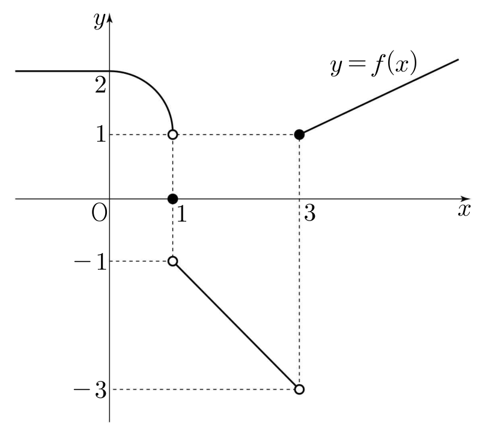
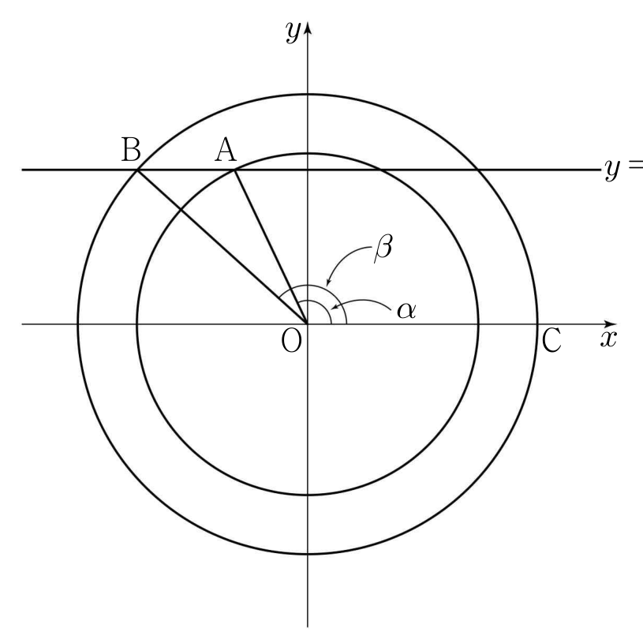
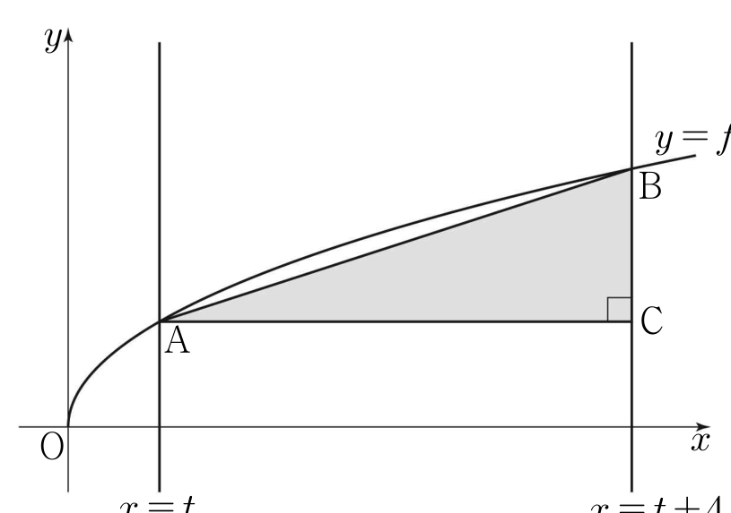
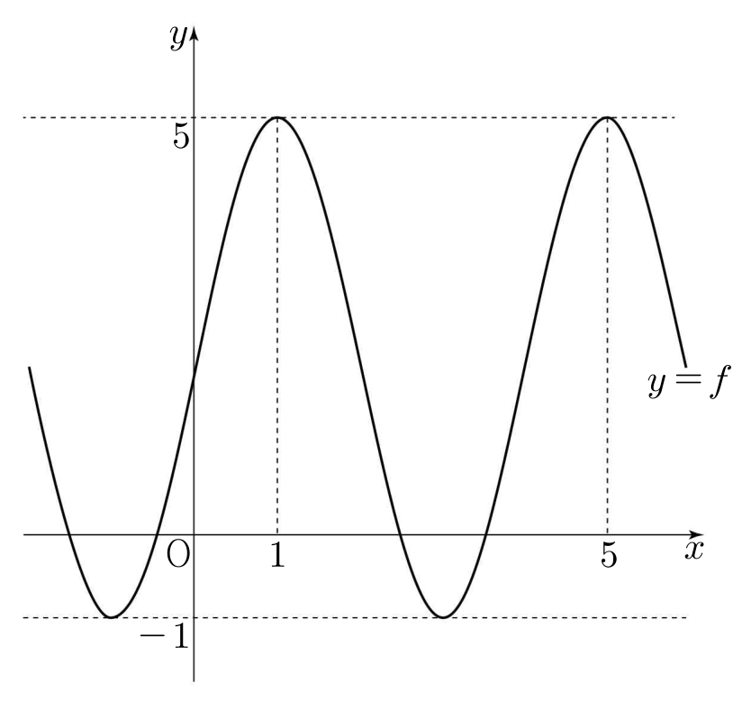
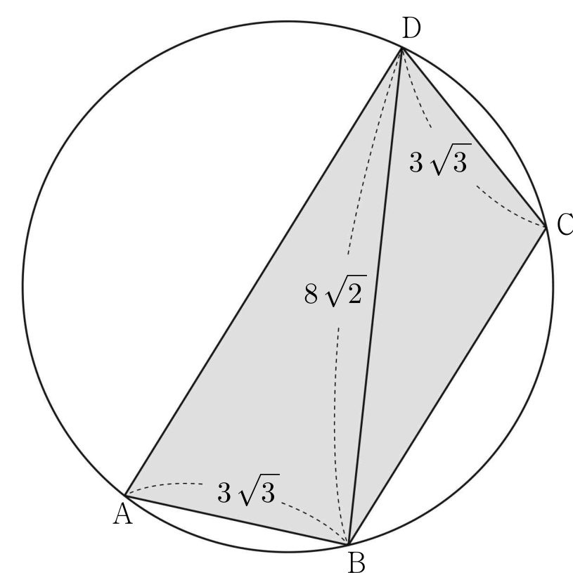

원본 (내부용)\(0\le x\le\frac{\pi}{3}\)일 때, 방정식 \(\sin 3x=1\)의 해는? [3점]
① \(\frac{\pi}{18}\)② \(\frac{\pi}{15}\)③ \(\frac{\pi}{12}\)④ \(\frac{\pi}{9}\)⑤ \(\frac{\pi}{6}\)
원본 정답 ⑤
원본 풀이 (내부용)[출제의도] 삼각함수를 활용하여 문제해결하기
\(
0\le x\le\frac{\pi}{3},\quad 0\le3x\le\pi
\)
에서 \(\sin\frac{\pi}{2}=1\)이므로 \(\sin3x=1\)에서 \(3x=\frac{\pi}{2}\).
따라서 \(x=\frac{\pi}{6}\).
생성기 숫자판 1/6 · G2M1-02b#0방정식 $\cos\left(x-\frac{\pi}{6}\right)=1$의 해로 옳은 것을 고르세요. (단, $0\le x\le \pi$)
① $\frac{\pi}{18}$② $\frac{\pi}{12}$③ $\frac{\pi}{9}$④ $\frac{\pi}{6}$⑤ $\frac{\pi}{4}$
정답④ $\frac{\pi}{6}$ $0\le x\le \pi$에서 $x-\frac{\pi}{6}$의 값의 범위는 $-\frac{\pi}{6}$ 이상 $\frac{5}{6}\pi$ 이하 이 범위에서 $\cos t=1$인 $t$는 $t=0$뿐입니다. $x-\frac{\pi}{6}=0$에서 $x=\frac{\pi}{6}$
숫자: 원본 0 3 3 1 → 쌍둥이 6 1 0 · 같은 수: 0 1
생성기 숫자판 2/6 · G2M1-02b#0방정식 $\cos\left(x-\frac{\pi}{6}\right)=0$의 해로 옳은 것을 고르세요. (단, $0\le x\le \pi$)
① $\frac{5}{12}\pi$② $\frac{\pi}{2}$③ $\frac{2}{3}\pi$④ $\frac{3}{4}\pi$⑤ $\frac{5}{6}\pi$
정답③ $\frac{2}{3}\pi$ $0\le x\le \pi$에서 $x-\frac{\pi}{6}$의 값의 범위는 $-\frac{\pi}{6}$ 이상 $\frac{5}{6}\pi$ 이하 이 범위에서 $\cos t=0$인 $t$는 $t=\frac{\pi}{2}$뿐입니다. $x-\frac{\pi}{6}=\frac{\pi}{2}$에서 $x=\frac{2}{3}\pi$
숫자: 원본 0 3 3 1 → 쌍둥이 6 0 0 · 같은 수: 0
생성기 숫자판 3/6 · G2M1-02b#0방정식 $\sin\left(x-\frac{\pi}{4}\right)=1$의 해로 옳은 것을 고르세요. (단, $0\le x\le \pi$)
① $\frac{\pi}{2}$② $\frac{2}{3}\pi$③ $\frac{3}{4}\pi$④ $\frac{5}{6}\pi$⑤ $\pi$
정답③ $\frac{3}{4}\pi$ $0\le x\le \pi$에서 $x-\frac{\pi}{4}$의 값의 범위는 $-\frac{\pi}{4}$ 이상 $\frac{3}{4}\pi$ 이하 이 범위에서 $\sin t=1$인 $t$는 $t=\frac{\pi}{2}$뿐입니다. $x-\frac{\pi}{4}=\frac{\pi}{2}$에서 $x=\frac{3}{4}\pi$
숫자: 원본 0 3 3 1 → 쌍둥이 4 1 0 · 같은 수: 0 1
생성기 숫자판 4/6 · G2M1-02b#0방정식 $\cos\left(x-\frac{\pi}{6}\right)=\frac{\sqrt{2}}{2}$의 해로 옳은 것을 고르세요. (단, $0\le x\le \frac{\pi}{2}$)
① $\frac{\pi}{6}$② $\frac{\pi}{4}$③ $\frac{\pi}{3}$④ $\frac{5}{12}\pi$⑤ $\frac{\pi}{2}$
정답④ $\frac{5}{12}\pi$ $0\le x\le \frac{\pi}{2}$에서 $x-\frac{\pi}{6}$의 값의 범위는 $-\frac{\pi}{6}$ 이상 $\frac{\pi}{3}$ 이하 이 범위에서 $\cos t=\frac{\sqrt{2}}{2}$인 $t$는 $t=\frac{\pi}{4}$뿐입니다. $x-\frac{\pi}{6}=\frac{\pi}{4}$에서 $x=\frac{5}{12}\pi$
숫자: 원본 0 3 3 1 → 쌍둥이 6 2 2 0 2 · 같은 수: 0
생성기 숫자판 5/6 · G2M1-02b#0방정식 $\sin 2x=-\frac{1}{2}$의 해로 옳은 것을 고르세요. (단, $0\le x\le \frac{2}{3}\pi$)
① $\frac{\pi}{3}$② $\frac{5}{12}\pi$③ $\frac{\pi}{2}$④ $\frac{7}{12}\pi$⑤ $\frac{2}{3}\pi$
정답④ $\frac{7}{12}\pi$ $0\le x\le \frac{2}{3}\pi$에서 $2x$의 값의 범위는 $0$ 이상 $\frac{4}{3}\pi$ 이하 이 범위에서 $\sin t=-\frac{1}{2}$인 $t$는 $t=\frac{7}{6}\pi$뿐입니다. $2x=\frac{7}{6}\pi$에서 $x=\frac{7}{12}\pi$
숫자: 원본 0 3 3 1 → 쌍둥이 2 1 2 0 2 3 · 같은 수: 0 1 3
생성기 숫자판 6/6 · G2M1-02b#0방정식 $\cos x=1$의 해로 옳은 것을 고르세요. (단, $0\le x\le \pi$)
① $0$② $\frac{\pi}{18}$③ $\frac{\pi}{12}$④ $\frac{\pi}{9}$⑤ $\frac{\pi}{6}$
정답① $0$ $0\le x\le \pi$에서 $x$의 값의 범위는 $0$ 이상 $\pi$ 이하 이 범위에서 $\cos t=1$인 $t$는 $t=0$뿐입니다. $x=0$에서 $x=0$
숫자: 원본 0 3 3 1 → 쌍둥이 1 0 · 같은 수: 0 1
6. 2019년 11월 나형 6번 · 3점 · 수학Ⅱ 함수의 극한·연속 · G2M6-01#4
원본 (내부용)두 함수 \(f(x),\ g(x)\)가 \( \lim_{x\to2}f(x)=1,\qquad \lim_{x\to2}\{2f(x)+g(x)\}=8 \) 을 만족시킬 때, \(\displaystyle\lim_{x\to2}g(x)\)의 값은? [3점]
① 2② 4③ 6④ 8⑤ 10
원본 정답 ③
원본 풀이 (내부용)[출제의도] 함수의 극한을 활용하여 문제해결하기
\(
\lim_{x\to2}2f(x)=2\times\lim_{x\to2}f(x)=2\times1=2
\)
이므로
\(
\begin{aligned}
\lim_{x\to2}g(x)
&=\lim_{x\to2}\{2f(x)+g(x)-2f(x)\}\\
&=\lim_{x\to2}\{2f(x)+g(x)\}-\lim_{x\to2}2f(x)\\
&=8-2=6
\end{aligned}
\)
생성기 숫자판 1/6 · G2M6-01#4두 함수 $f\left(x\right)$, $g\left(x\right)$에 대하여 $\lim_{x\to -1}f\left(x\right)=4$, $\lim_{x\to -1}\left\{2f\left(x\right)+g\left(x\right)\right\}=15$일 때, $\lim_{x\to -1}g\left(x\right)$의 값으로 옳은 것을 고르세요.
생성기 숫자판 2/6 · G2M6-01#4두 함수 $f\left(x\right)$, $g\left(x\right)$에 대하여 $\lim_{x\to -1}f\left(x\right)=-3$, $\lim_{x\to -1}\left\{4f\left(x\right)+g\left(x\right)\right\}=8$일 때, $\lim_{x\to -1}g\left(x\right)$의 값으로 옳은 것을 고르세요.
생성기 숫자판 3/6 · G2M6-01#4두 함수 $f\left(x\right)$, $g\left(x\right)$에 대하여 $\lim_{x\to 3}f\left(x\right)=1$, $\lim_{x\to 3}\left\{2f\left(x\right)+g\left(x\right)\right\}=-2$일 때, $\lim_{x\to 3}g\left(x\right)$의 값으로 옳은 것을 고르세요.
생성기 숫자판 4/6 · G2M6-01#4두 함수 $f\left(x\right)$, $g\left(x\right)$에 대하여 $\lim_{x\to 2}f\left(x\right)=1$, $\lim_{x\to 2}\left\{2f\left(x\right)+g\left(x\right)\right\}=15$일 때, $\lim_{x\to 2}g\left(x\right)$의 값으로 옳은 것을 고르세요.
생성기 숫자판 5/6 · G2M6-01#4두 함수 $f\left(x\right)$, $g\left(x\right)$에 대하여 $\lim_{x\to -1}f\left(x\right)=-3$, $\lim_{x\to -1}\left\{3f\left(x\right)+g\left(x\right)\right\}=12$일 때, $\lim_{x\to -1}g\left(x\right)$의 값으로 옳은 것을 고르세요.
생성기 숫자판 6/6 · G2M6-01#4두 함수 $f\left(x\right)$, $g\left(x\right)$에 대하여 $\lim_{x\to -1}f\left(x\right)=3$, $\lim_{x\to -1}\left\{3f\left(x\right)+g\left(x\right)\right\}=1$일 때, $\lim_{x\to -1}g\left(x\right)$의 값으로 옳은 것을 고르세요.
7. 2019년 11월 나형 7번 · 3점 · 수학Ⅱ 함수의 극한·연속 · G2f-15#1
원본 (내부용)함수 \(y=f(x)\)의 그래프가 그림과 같다. 그림의 표시: \(x=1\)에서 \((1,1)\)과 \((1,-1)\)은 빈 원, \((1,0)\)은 검은 점이다. 곡선은 왼쪽에서 \(y=2\)를 따라오다가 \((1,1)\)의 빈 원으로 이어진다. \((1,-1)\)의 빈 원에서 출발하는 선분은 \((3,-3)\)의 빈 원까지 내려가며, \((3,1)\)은 검은 점이다. \(x=3\)의 검은 점에서 오른쪽 위로 뻗는 직선이 있다. \(y=1\)에서 \(x=1\)부터 \(x=3\)까지 점선, \(y=-3\)에서 \(x=3\)까지 점선이 표시되어 있다. 축에는 \(x=1,3\), \(y=2,1,-1,-3\)이 표시되어 있다. \( f(3)+\lim_{x\to1^-}f(x)\text{의 값은?} \) [3점]

① \(-2\)② \(-1\)③ 0④ 1⑤ 2
그림·참고 *하단 표기: 2 / 12*
원본 정답 ⑤
원본 풀이 (내부용)[출제의도] 함수의 극한 이해하기
\(
f(3)+\lim_{x\to1^-}f(x)=1+1=2
\)
생성기 숫자판 1/6 · G2f-15#1함수 $y=f\left(x\right)$의 그래프가 그림과 같습니다. $f\left(2\right)+\lim_{x\to 1^{-}}f\left(x\right)$의 값으로 옳은 것을 고르세요.
① $4$② $5$③ $6$④ $7$⑤ $8$
정답③ $6$ $f\left(2\right)=3$ $x\to 1^{-}$일 때 $f\left(x\right)\to 3$ 따라서 구하는 값은 $3+3=6$
원본 (내부용)수열 \(\{a_n\}\)은 \(a_1=1\)이고, 모든 자연수 \(n\)에 대하여 \( a_{n+1}+a_n=n+3 \) 을 만족시킨다. \(a_4\)의 값은? [3점]
① 1② 2③ 3④ 4⑤ 5
원본 정답 ④
원본 풀이 (내부용)[출제의도] 수열의 귀납적 정의를 이용하여 추론하기
\(
a_{n+1}+a_n=n+3
\)
에서
\(
a_{n+1}=n+3-a_n
\)
이다.
\(n=1\)일 때, \(a_2=1+3-a_1=3\)
\(n=2\)일 때, \(a_3=2+3-a_2=2\)
\(n=3\)일 때, \(a_4=3+3-a_3=4\)
생성기 숫자판 1/6 · G2M1-05#15수열 $\left\{a_{n}\right\}$은 $a_{1}=3$이고, 모든 자연수 $n$에 대하여 $a_{n+1}+a_{n}=2n+5$일 때, $a_{4}$의 값으로 옳은 것을 고르세요.
① $2$② $3$③ $4$④ $5$⑤ $6$
정답⑤ $6$ $n=1$일 때 $a_{2}=7-3=4$, $n=2$일 때 $a_{3}=9-4=5$, $n=3$일 때 $a_{4}=11-5=6$
숫자: 원본 1 1 1 3 4 → 쌍둥이 1 3 1 2 5 4 · 같은 수: 1 3 4
생성기 숫자판 2/6 · G2M1-05#15수열 $\left\{a_{n}\right\}$은 $a_{1}=5$이고, 모든 자연수 $n$에 대하여 $a_{n+1}+a_{n}=3n+1$일 때, $a_{5}$의 값으로 옳은 것을 고르세요.
① $8$② $9$③ $10$④ $11$⑤ $12$
정답④ $11$ $n=1$일 때 $a_{2}=4-5=-1$, $n=2$일 때 $a_{3}=7-\left(-1\right)=8$, $n=3$일 때 $a_{4}=10-8=2$, $n=4$일 때 $a_{5}=13-2=11$
숫자: 원본 1 1 1 3 4 → 쌍둥이 1 5 1 3 1 5 · 같은 수: 1 3
생성기 숫자판 3/6 · G2M1-05#15수열 $\left\{a_{n}\right\}$은 $a_{1}=1$이고, 모든 자연수 $n$에 대하여 $a_{n+1}+a_{n}=2n+3$일 때, $a_{4}$의 값으로 옳은 것을 고르세요.
① $6$② $7$③ $8$④ $9$⑤ $10$
정답① $6$ $n=1$일 때 $a_{2}=5-1=4$, $n=2$일 때 $a_{3}=7-4=3$, $n=3$일 때 $a_{4}=9-3=6$
숫자: 원본 1 1 1 3 4 → 쌍둥이 1 1 1 2 3 4 · 같은 수: 1 3 4
생성기 숫자판 4/6 · G2M1-05#15수열 $\left\{a_{n}\right\}$은 $a_{1}=2$이고, 모든 자연수 $n$에 대하여 $a_{n+1}+a_{n}=n+1$일 때, $a_{5}$의 값으로 옳은 것을 고르세요.
① $2$② $3$③ $4$④ $5$⑤ $6$
정답③ $4$ $n=1$일 때 $a_{2}=2-2=0$, $n=2$일 때 $a_{3}=3-0=3$, $n=3$일 때 $a_{4}=4-3=1$, $n=4$일 때 $a_{5}=5-1=4$
숫자: 원본 1 1 1 3 4 → 쌍둥이 1 2 1 1 5 · 같은 수: 1
생성기 숫자판 5/6 · G2M1-05#15수열 $\left\{a_{n}\right\}$은 $a_{1}=2$이고, 모든 자연수 $n$에 대하여 $a_{n+1}+a_{n}=3n+6$일 때, $a_{5}$의 값으로 옳은 것을 고르세요.
① $4$② $5$③ $6$④ $7$⑤ $8$
정답⑤ $8$ $n=1$일 때 $a_{2}=9-2=7$, $n=2$일 때 $a_{3}=12-7=5$, $n=3$일 때 $a_{4}=15-5=10$, $n=4$일 때 $a_{5}=18-10=8$
숫자: 원본 1 1 1 3 4 → 쌍둥이 1 2 1 3 6 5 · 같은 수: 1 3
생성기 숫자판 6/6 · G2M1-05#15수열 $\left\{a_{n}\right\}$은 $a_{1}=4$이고, 모든 자연수 $n$에 대하여 $a_{n+1}+a_{n}=2n+1$일 때, $a_{4}$의 값으로 옳은 것을 고르세요.
① $-2$② $-1$③ $0$④ $1$⑤ $2$
정답④ $1$ $n=1$일 때 $a_{2}=3-4=-1$, $n=2$일 때 $a_{3}=5-\left(-1\right)=6$, $n=3$일 때 $a_{4}=7-6=1$
숫자: 원본 1 1 1 3 4 → 쌍둥이 1 4 1 2 1 4 · 같은 수: 1 4
9. 2019년 11월 나형 9번 · 3점 · 수학Ⅱ 미분 · G2M6-02#4
원본 (내부용)함수 \(f(x)=(x-2)(x^3-4x+a)\)에 대하여 \(f'(1)=6\)일 때, 상수 \(a\)의 값은? [3점]
① 4② 5③ 6④ 7⑤ 8
원본 정답 ⑤
원본 풀이 (내부용)[출제의도] 도함수를 활용하여 문제해결하기
함수 \(f(x)=(x-2)(x^3-4x+a)\)에서
\(
f'(x)=(x^3-4x+a)+(x-2)(3x^2-4)
\)
\(
f'(1)=(a-3)+(-1)(-1)=a-2=6
\)
따라서 \(a=8\).
생성기 숫자판 1/6 · G2M6-02#4함수 $f\left(x\right)=\left(x-2\right)\left(x^{3}+a\right)$에 대하여 $f'\left(0\right)=-4$일 때, 상수 $a$의 값으로 옳은 것을 고르세요.
원본 (내부용)\(\overline{AB}=4,\ \overline{BC}=5,\ \overline{CA}=\sqrt{11}\)인 삼각형 \(ABC\)에서 \(\angle ABC=\theta\)라 할 때, \(\cos\theta\)의 값은? [3점]
① \(\frac{2}{3}\)② \(\frac{3}{4}\)③ \(\frac{4}{5}\)④ \(\frac{5}{6}\)⑤ \(\frac{6}{7}\)
그림·참고 *하단 표기: 3 / 12*
원본 정답 ②
원본 풀이 (내부용)[출제의도] 코사인법칙 이해하기
**도형 설명:** 삼각형 \(ABC\)에서 \(A\)는 위쪽, \(B\)는 왼쪽 아래, \(C\)는 오른쪽 아래에 있다. \(AB=4,\ BC=5,\ AC=\sqrt{11}\)이고, \(\theta\)는 \(B\)에서 \(BA\)와 \(BC\)가 이루는 각이다.
\(
\cos\theta
=\frac{4^2+5^2-(\sqrt{11})^2}{2\times4\times5}
=\frac{30}{40}
=\frac34
\)
생성기 숫자판 1/6 · G2M1-02#16$\overline{\mathrm{AB}}=5$, $\overline{\mathrm{BC}}=2$, $\overline{\mathrm{CA}}=\sqrt{44}$인 삼각형 $\mathrm{ABC}$에서 $\angle \mathrm{ABC}=\theta$라 할 때, $\cos\theta$의 값으로 옳은 것을 고르세요.
① $-\frac{3}{4}$② $-\frac{5}{8}$③ $-\frac{1}{2}$④ $-\frac{3}{8}$⑤ $\frac{3}{4}$
정답① $-\frac{3}{4}$ 코사인법칙에 의하여 $\cos\theta=\frac{5^{2}+2^{2}-\left(\sqrt{44}\right)^{2}}{2\times 5\times 2}$ $=\frac{-15}{20}$ $=-\frac{3}{4}$
숫자: 원본 4 5 11 → 쌍둥이 5 2 44 · 같은 수: 5
생성기 숫자판 2/6 · G2M1-02#16$\overline{\mathrm{AB}}=5$, $\overline{\mathrm{BC}}=6$, $\overline{\mathrm{CA}}=\sqrt{21}$인 삼각형 $\mathrm{ABC}$에서 $\angle \mathrm{ABC}=\theta$라 할 때, $\cos\theta$의 값으로 옳은 것을 고르세요.
① $-\frac{2}{3}$② $\frac{5}{12}$③ $\frac{2}{3}$④ $\frac{19}{24}$⑤ $\frac{11}{12}$
정답③ $\frac{2}{3}$ 코사인법칙에 의하여 $\cos\theta=\frac{5^{2}+6^{2}-\left(\sqrt{21}\right)^{2}}{2\times 5\times 6}$ $=\frac{40}{60}$ $=\frac{2}{3}$
숫자: 원본 4 5 11 → 쌍둥이 5 6 21 · 같은 수: 5
생성기 숫자판 3/6 · G2M1-02#16$\overline{\mathrm{AB}}=2$, $\overline{\mathrm{BC}}=4$, $\overline{\mathrm{CA}}=\sqrt{15}$인 삼각형 $\mathrm{ABC}$에서 $\angle \mathrm{ABC}=\theta$라 할 때, $\cos\theta$의 값으로 옳은 것을 고르세요.
① $\frac{1}{16}$② $\frac{5}{16}$③ $\frac{7}{16}$④ $\frac{9}{16}$⑤ $\frac{11}{16}$
정답② $\frac{5}{16}$ 코사인법칙에 의하여 $\cos\theta=\frac{2^{2}+4^{2}-\left(\sqrt{15}\right)^{2}}{2\times 2\times 4}$ $=\frac{5}{16}$
숫자: 원본 4 5 11 → 쌍둥이 2 4 15 · 같은 수: 4
생성기 숫자판 4/6 · G2M1-02#16$\overline{\mathrm{AB}}=3$, $\overline{\mathrm{BC}}=3$, $\overline{\mathrm{CA}}=\sqrt{3}$인 삼각형 $\mathrm{ABC}$에서 $\angle \mathrm{ABC}=\theta$라 할 때, $\cos\theta$의 값으로 옳은 것을 고르세요.
① $\frac{7}{12}$② $\frac{5}{6}$③ $\frac{23}{24}$④ $\frac{13}{12}$⑤ $\frac{29}{24}$
정답② $\frac{5}{6}$ 코사인법칙에 의하여 $\cos\theta=\frac{3^{2}+3^{2}-\left(\sqrt{3}\right)^{2}}{2\times 3\times 3}$ $=\frac{15}{18}$ $=\frac{5}{6}$
숫자: 원본 4 5 11 → 쌍둥이 3 3 3
생성기 숫자판 5/6 · G2M1-02#16$\overline{\mathrm{AB}}=3$, $\overline{\mathrm{BC}}=8$, $\overline{\mathrm{CA}}=\sqrt{101}$인 삼각형 $\mathrm{ABC}$에서 $\angle \mathrm{ABC}=\theta$라 할 때, $\cos\theta$의 값으로 옳은 것을 고르세요.
① $-\frac{5}{6}$② $-\frac{17}{24}$③ $-\frac{7}{12}$④ $-\frac{1}{3}$⑤ $\frac{7}{12}$
정답③ $-\frac{7}{12}$ 코사인법칙에 의하여 $\cos\theta=\frac{3^{2}+8^{2}-\left(\sqrt{101}\right)^{2}}{2\times 3\times 8}$ $=\frac{-28}{48}$ $=-\frac{7}{12}$
숫자: 원본 4 5 11 → 쌍둥이 3 8 101
생성기 숫자판 6/6 · G2M1-02#16$\overline{\mathrm{AB}}=2$, $\overline{\mathrm{BC}}=3$, $\overline{\mathrm{CA}}=\sqrt{11}$인 삼각형 $\mathrm{ABC}$에서 $\angle \mathrm{ABC}=\theta$라 할 때, $\cos\theta$의 값으로 옳은 것을 고르세요.
① $-\frac{1}{12}$② $\frac{1}{6}$③ $\frac{1}{4}$④ $\frac{7}{24}$⑤ $\frac{5}{12}$
정답② $\frac{1}{6}$ 코사인법칙에 의하여 $\cos\theta=\frac{2^{2}+3^{2}-\left(\sqrt{11}\right)^{2}}{2\times 2\times 3}$ $=\frac{2}{12}$ $=\frac{1}{6}$
원본 (내부용)그림과 같이 곡선 \(y=\frac{2^x}{3}\)이 두 직선 \(y=1,\ y=4\)와 만나는 점을 각각 \(A,\ B\)라 할 때, 직선 \(AB\)의 기울기는? [3점] 그림의 표시: 곡선 \(y=\frac{2^x}{3}\)이 수평선 \(y=1\)과 \(A\)에서 만나고, 수평선 \(y=4\)와 \(B\)에서 만난다. 두 수평선, \(x\)축, \(y\)축과 원점 \(O\)가 표시되어 있다.
① \(\frac{5}{4}\)② \(\frac{3}{2}\)③ \(\frac{7}{4}\)④ 2⑤ \(\frac{9}{4}\)
원본 정답 ②
원본 풀이 (내부용)[출제의도] 지수함수를 활용하여 문제해결하기
두 점 \(A,B\)의 좌표를 각각 \((a,1),(b,4)\)라 하자.
\(
\frac{2^a}{3}=1,\quad \frac{2^b}{3}=4
\)
이므로 \(2^a=3,\ 2^b=12\)이고,
\(
2^{b-a}=\frac{2^b}{2^a}=\frac{12}{3}=4
\)
에서 \(b-a=2\).
따라서 직선 \(AB\)의 기울기는
\(
\frac{4-1}{b-a}=\frac32
\)
[다른 풀이]
두 점 \(A,B\)의 좌표를 각각 \((a,1),(b,4)\)라 하자.
\(
y=\frac{2^x}{3}
\)
에서 \(x=\log_2 3y\)이므로
\(
a=\log_2(3\times1)=\log_2 3
\)
\(
b=\log_2(3\times4)=\log_2 12
\)
\(
b-a=\log_2 12-\log_2 3=\log_2 4=2
\)
따라서 직선 \(AB\)의 기울기는
\(
\frac{4-1}{b-a}=\frac32
\)
생성기 숫자판 1/6 · G2M10-04#0곡선 $y=\frac{2^{x}}{5}$이 두 직선 $y=2$, $y=4$와 만나는 점을 각각 $\mathrm{A}$, $\mathrm{B}$라 할 때, 직선 $\mathrm{AB}$의 기울기로 옳은 것을 고르세요.
① $\frac{5}{4}$② $\frac{3}{2}$③ $\frac{7}{4}$④ $2$⑤ $\frac{9}{4}$
정답④ $2$ $\frac{2^{x}}{5}=2$에서 $2^{x}=10$, $x=\log_{2}10$이므로 $\mathrm{A}\left(\log_{2}10,\ 2\right)$ $\frac{2^{x}}{5}=4$에서 $2^{x}=20$, $x=\log_{2}20$이므로 $\mathrm{B}\left(\log_{2}20,\ 4\right)$ $\log_{2}20-\log_{2}10=\log_{2}2=1$ 따라서 직선 $\mathrm{AB}$의 기울기는 $\frac{4-2}{1}=2$
숫자: 원본 2 3 1 4 2 3 1 4 → 쌍둥이 2 5 2 4 · 같은 수: 2 4
생성기 숫자판 2/6 · G2M10-04#0곡선 $y=\frac{3^{x}}{5}$이 두 직선 $y=3$, $y=27$과 만나는 점을 각각 $\mathrm{A}$, $\mathrm{B}$라 할 때, 직선 $\mathrm{AB}$의 기울기로 옳은 것을 고르세요.
① $11$② $\frac{45}{4}$③ $\frac{23}{2}$④ $\frac{47}{4}$⑤ $12$
정답⑤ $12$ $\frac{3^{x}}{5}=3$에서 $3^{x}=15$, $x=\log_{3}15$이므로 $\mathrm{A}\left(\log_{3}15,\ 3\right)$ $\frac{3^{x}}{5}=27$에서 $3^{x}=135$, $x=\log_{3}135$이므로 $\mathrm{B}\left(\log_{3}135,\ 27\right)$ $\log_{3}135-\log_{3}15=\log_{3}9=2$ 따라서 직선 $\mathrm{AB}$의 기울기는 $\frac{27-3}{2}=12$
숫자: 원본 2 3 1 4 2 3 1 4 → 쌍둥이 3 5 3 27 · 같은 수: 3
생성기 숫자판 3/6 · G2M10-04#0곡선 $y=\frac{3^{x}}{5}$이 두 직선 $y=2$, $y=6$과 만나는 점을 각각 $\mathrm{A}$, $\mathrm{B}$라 할 때, 직선 $\mathrm{AB}$의 기울기로 옳은 것을 고르세요.
① $3$② $\frac{13}{4}$③ $\frac{7}{2}$④ $\frac{15}{4}$⑤ $4$
정답⑤ $4$ $\frac{3^{x}}{5}=2$에서 $3^{x}=10$, $x=\log_{3}10$이므로 $\mathrm{A}\left(\log_{3}10,\ 2\right)$ $\frac{3^{x}}{5}=6$에서 $3^{x}=30$, $x=\log_{3}30$이므로 $\mathrm{B}\left(\log_{3}30,\ 6\right)$ $\log_{3}30-\log_{3}10=\log_{3}3=1$ 따라서 직선 $\mathrm{AB}$의 기울기는 $\frac{6-2}{1}=4$
숫자: 원본 2 3 1 4 2 3 1 4 → 쌍둥이 3 5 2 6 · 같은 수: 2 3
생성기 숫자판 4/6 · G2M10-04#0곡선 $y=\frac{2^{x}}{5}$이 두 직선 $y=1$, $y=4$와 만나는 점을 각각 $\mathrm{A}$, $\mathrm{B}$라 할 때, 직선 $\mathrm{AB}$의 기울기로 옳은 것을 고르세요.
① $1$② $\frac{5}{4}$③ $\frac{3}{2}$④ $\frac{7}{4}$⑤ $2$
정답③ $\frac{3}{2}$ $\frac{2^{x}}{5}=1$에서 $2^{x}=5$, $x=\log_{2}5$이므로 $\mathrm{A}\left(\log_{2}5,\ 1\right)$ $\frac{2^{x}}{5}=4$에서 $2^{x}=20$, $x=\log_{2}20$이므로 $\mathrm{B}\left(\log_{2}20,\ 4\right)$ $\log_{2}20-\log_{2}5=\log_{2}4=2$ 따라서 직선 $\mathrm{AB}$의 기울기는 $\frac{4-1}{2}=\frac{3}{2}$
원본 (내부용)함수 \( f(x)= \begin{cases} x^3-ax^2+bx & (x\le1)\\ 2x+b & (x>1) \end{cases} \) 이 실수 전체의 집합에서 미분가능할 때, \(a\times b\)의 값은? (단, \(a\)와 \(b\)는 상수이다.) [3점]
① \(-3\)② \(-1\)③ 1④ 3⑤ 5
원본 정답 ④
원본 풀이 (내부용)[출제의도] 미분가능성 이해하기
\(f(x)\)는 \(x=1\)에서 미분가능하므로 \(x=1\)에서 연속이다. 즉,
\(
\lim_{x\to1^+}f(x)=\lim_{x\to1^-}f(x)=f(1)
\)
\(
\lim_{x\to1^+}f(x)=2+b,\qquad
\lim_{x\to1^-}f(x)=f(1)=1-a+b
\)
이므로
\(
2+b=1-a+b
\)
에서 \(a=-1\).
\(f(x)\)는 \(x=1\)에서 미분가능하므로
\(
\lim_{x\to1^-}\frac{f(x)-f(1)}{x-1}
=\lim_{x\to1^+}\frac{f(x)-f(1)}{x-1}
\)
이다.
\(
\lim_{x\to1^-}\frac{f(x)-f(1)}{x-1}=3-2a+b=5+b
\)
이고
\(
\lim_{x\to1^+}\frac{f(x)-f(1)}{x-1}=2
\)
이므로 \(5+b=2\)에서 \(b=-3\).
따라서 \(a\times b=3\).
생성기 숫자판 1/5 · G2M8-07#5함수 $f\left(x\right)=\begin{cases}x^{3}-ax^{2}+bx & \left(x\le 1\right)\\ 11x+b & \left(x>1\right)\end{cases}$이 실수 전체의 집합에서 미분가능할 때, $a\times b$의 값으로 옳은 것을 고르세요. (단, $a$와 $b$는 상수입니다.)
① $118$② $119$③ $120$④ $121$⑤ $122$
정답③ $120$ $x=1$에서 연속이므로 $1-a+b=11+b$ $x=1$에서 미분계수가 같아야 하므로 $3-2a+b=11$ 두 식에서 $a=-10$, $b=-12$ 따라서 $a\times b=\left(-10\right)\times \left(-12\right)=120$
숫자: 원본 1 2 1 → 쌍둥이 1 11 1 · 같은 수: 1
생성기 숫자판 2/5 · G2M8-07#5함수 $f\left(x\right)=\begin{cases}x^{3}-ax^{2}+bx & \left(x\le 1\right)\\ 7x+b & \left(x>1\right)\end{cases}$이 실수 전체의 집합에서 미분가능할 때, $a\times b$의 값으로 옳은 것을 고르세요. (단, $a$와 $b$는 상수입니다.)
① $47$② $48$③ $49$④ $50$⑤ $51$
정답② $48$ $x=1$에서 연속이므로 $1-a+b=7+b$ $x=1$에서 미분계수가 같아야 하므로 $3-2a+b=7$ 두 식에서 $a=-6$, $b=-8$ 따라서 $a\times b=\left(-6\right)\times \left(-8\right)=48$
숫자: 원본 1 2 1 → 쌍둥이 1 7 1 · 같은 수: 1
생성기 숫자판 3/5 · G2M8-07#5함수 $f\left(x\right)=\begin{cases}x^{3}-ax^{2}+bx & \left(x\le 1\right)\\ 5x+b & \left(x>1\right)\end{cases}$이 실수 전체의 집합에서 미분가능할 때, $a\times b$의 값으로 옳은 것을 고르세요. (단, $a$와 $b$는 상수입니다.)
① $22$② $23$③ $24$④ $25$⑤ $26$
정답③ $24$ $x=1$에서 연속이므로 $1-a+b=5+b$ $x=1$에서 미분계수가 같아야 하므로 $3-2a+b=5$ 두 식에서 $a=-4$, $b=-6$ 따라서 $a\times b=\left(-4\right)\times \left(-6\right)=24$
숫자: 원본 1 2 1 → 쌍둥이 1 5 1 · 같은 수: 1
생성기 숫자판 4/5 · G2M8-07#5함수 $f\left(x\right)=\begin{cases}x^{3}-ax^{2}+bx & \left(x\le 1\right)\\ 3x+b & \left(x>1\right)\end{cases}$이 실수 전체의 집합에서 미분가능할 때, $a\times b$의 값으로 옳은 것을 고르세요. (단, $a$와 $b$는 상수입니다.)
① $8$② $9$③ $10$④ $11$⑤ $12$
정답① $8$ $x=1$에서 연속이므로 $1-a+b=3+b$ $x=1$에서 미분계수가 같아야 하므로 $3-2a+b=3$ 두 식에서 $a=-2$, $b=-4$ 따라서 $a\times b=\left(-2\right)\times \left(-4\right)=8$
숫자: 원본 1 2 1 → 쌍둥이 1 3 1 · 같은 수: 1
생성기 숫자판 5/5 · G2M8-07#5함수 $f\left(x\right)=\begin{cases}x^{3}-ax^{2}+bx & \left(x\le 1\right)\\ 6x+b & \left(x>1\right)\end{cases}$이 실수 전체의 집합에서 미분가능할 때, $a\times b$의 값으로 옳은 것을 고르세요. (단, $a$와 $b$는 상수입니다.)
① $31$② $32$③ $33$④ $34$⑤ $35$
정답⑤ $35$ $x=1$에서 연속이므로 $1-a+b=6+b$ $x=1$에서 미분계수가 같아야 하므로 $3-2a+b=6$ 두 식에서 $a=-5$, $b=-7$ 따라서 $a\times b=\left(-5\right)\times \left(-7\right)=35$
숫자: 원본 1 2 1 → 쌍둥이 1 6 1 · 같은 수: 1
14. 2019년 11월 나형 14번 · 4점 · 수학Ⅰ 수열 · 4점 쌍둥이
원본 (내부용)서로 다른 두 실수 \(a,\ b\)에 대하여 세 수 \(a,\ b,\ 6\)이 순서대로 등차수열을 이루고, 세 수 \(a,\ 6,\ b\)가 이 순서대로 등비수열을 이룬다. \(a+b\)의 값은? [4점]
① \(-15\)② \(-8\)③ \(-1\)④ 6⑤ 13
그림·참고 *하단 표기: 5 / 12*
원본 정답 ①
원본 풀이 (내부용)[출제의도] 등차수열과 등비수열 이해하기
\(a,b,6\)이 이 순서대로 등차수열을 이루므로
\(
2b=a+6\quad\cdots㉠
\)
\(a,6,b\)가 이 순서대로 등비수열을 이루므로
\(
6^2=ab\quad\cdots㉡
\)
㉠, ㉡에 의하여
\(
(2b-6)b=36
\)
\(
b^2-3b-18=(b-6)(b+3)=0
\)
\(
b=6\text{ 또는 }b=-3
\)
㉠에서 \(b=6\)일 때 \(a=6\)이므로 조건에 맞지 않는다.
\(b=-3\)일 때 \(a=-12\).
따라서 \(a+b=-12-3=-15\).
쌍둥이 1/5 · 4점 쌍둥이서로 다른 두 실수 $a$, $b$에 대하여 세 수 $a$, $b$, $4$가 이 순서대로 등차수열을 이루고, 세 수 $a$, $4$, $b$가 이 순서대로 등비수열을 이룹니다. $a+b$의 값으로 옳은 것을 고르세요.
원본 (내부용)그림과 같이 좌표평면에서 직선 \(y=2\)가 두 원 \(x^2+y^2=5,\ x^2+y^2=9\)와 제2사분면에서 만나는 점을 각각 \(A,\ B\)라 하자. 점 \(C(3,0)\)에 대하여 \(\angle COA=\alpha,\ \angle COB=\beta\)라 할 때, \( \sin\alpha\times\cos\beta \) 의 값은? (단, \(O\)는 원점이고, \(\frac{\pi}{2}<\alpha<\beta<\pi\)) [4점] 그림의 표시: 중심이 \(O\)인 두 원 \(x^2+y^2=5,\ x^2+y^2=9\)가 그려져 있다. \(y=2\)와 두 원의 제2사분면 교점 중 안쪽 원의 점은 \(A\), 바깥쪽 원의 점은 \(B\)이다. \(C\)는 양의 \(x\)축 위의 \((3,0)\)에 표시되어 있다. \(OA, OB, OC\) 방향과 각 \(\alpha,\beta\), 좌표축이 표시되어 있다.

① \(\frac{1}{3}\)② \(\frac{1}{12}\)③ \(-\frac{1}{6}\)④ \(-\frac{5}{12}\)⑤ \(-\frac{2}{3}\)
원본 정답 ⑤
원본 풀이 (내부용)[출제의도] 삼각함수의 뜻 이해하기
**도형 설명:** 중심이 \(O\)인 두 원, \(x\)축·\(y\)축, 직선 \(y=2\)가 그려져 있다. 직선 \(y=2\)는 제2사분면에서 안쪽 원과 \(A\), 바깥 원과 \(B\)에서 만나며, 바깥 원은 \(x\)축의 양의 방향에서 \(C\)와 만난다. \(O\)에서 그은 선분과 \(x\)축 사이의 각은 각각 \(\alpha,\beta\)로 표시되어 있다. \(x\)축에는 \(-1\), \(-\sqrt5\)가 표시되어 있다.
직선 \(y=2\)와 원 \(x^2+y^2=5\)의 제2사분면에서 만나는 점 \(A\)의 좌표는 \((-1,2)\)이고,
\(
\overline{OA}=\sqrt5
\)
이므로
\(
\sin\alpha=\frac2{\sqrt5}
\)
직선 \(y=2\)와 원 \(x^2+y^2=9\)의 제2사분면에서 만나는 점 \(B\)의 좌표는 \((-\sqrt5,2)\)이고,
\(
\overline{OB}=3
\)
이므로
\(
\cos\beta=-\frac{\sqrt5}{3}
\)
따라서
\(
\sin\alpha\times\cos\beta
=\frac2{\sqrt5}\times\left(-\frac{\sqrt5}{3}\right)
=-\frac23
\)
쌍둥이 1/5 · 4점 쌍둥이좌표평면에서 y=15인 직선이 원 $x^2+y^2=289$, $x^2+y^2=625$와 제2사분면에서 만나는 점을 A,B라 합니다. O는 원점, C=(2,0), $\angle COA=\alpha$, $\angle COB=\beta$일 때 $\sin\alpha\cos\beta$는?
① $-\frac{14}{17}$② $-\frac{13}{17}$③ $-\frac{12}{17}$④ $-\frac{11}{17}$⑤ $-\frac{10}{17}$
쌍둥이 2/5 · 4점 쌍둥이좌표평면에서 직선 $y=3$이 두 원 $x^{2}+y^{2}=16$, $x^{2}+y^{2}=25$와 제$2$사분면에서 만나는 점을 각각 $\mathrm{A}$, $\mathrm{B}$라 합니다. 점 $\mathrm{C}(3,\ 0)$에 대하여 $\angle\mathrm{COA}=\alpha$, $\angle\mathrm{COB}=\beta$라 할 때, $\sin\alpha\times\cos\beta$의 값으로 옳은 것을 고르세요. (단, $\mathrm{O}$는 원점이고, $\frac{\pi}{2}<\alpha<\beta<\pi$)
① $-\frac{4}{5}$② $-\frac{3}{5}$③ $-\frac{2}{5}$④ $-\frac{1}{5}$⑤ $0$
쌍둥이 3/5 · 4점 쌍둥이좌표평면에서 직선 $y=1$이 두 원 $x^{2}+y^{2}=3$, $x^{2}+y^{2}=4$와 제$2$사분면에서 만나는 점을 각각 $\mathrm{A}$, $\mathrm{B}$라 합니다. 점 $\mathrm{C}(3,\ 0)$에 대하여 $\angle\mathrm{COA}=\alpha$, $\angle\mathrm{COB}=\beta$라 할 때, $\sin\alpha\times\cos\beta$의 값으로 옳은 것을 고르세요. (단, $\mathrm{O}$는 원점이고, $\frac{\pi}{2}<\alpha<\beta<\pi$)
① $-\frac{3}{2}$② $-1$③ $-\frac{1}{2}$④ $0$⑤ $\frac{1}{2}$
쌍둥이 4/5 · 4점 쌍둥이좌표평면에서 직선 $y=5$가 두 원 $x^{2}+y^{2}=39$, $x^{2}+y^{2}=64$와 제$2$사분면에서 만나는 점을 각각 $\mathrm{A}$, $\mathrm{B}$라 합니다. 점 $\mathrm{C}(3,\ 0)$에 대하여 $\angle\mathrm{COA}=\alpha$, $\angle\mathrm{COB}=\beta$라 할 때, $\sin\alpha\times\cos\beta$의 값으로 옳은 것을 고르세요. (단, $\mathrm{O}$는 원점이고, $\frac{\pi}{2}<\alpha<\beta<\pi$)
① $-1$② $-\frac{7}{8}$③ $-\frac{3}{4}$④ $-\frac{5}{8}$⑤ $-\frac{1}{2}$
쌍둥이 5/5 · 4점 쌍둥이좌표평면에서 y=12인 직선이 원 $x^2+y^2=169$, $x^2+y^2=400$과 제2사분면에서 만나는 점을 A,B라 합니다. O는 원점, C=(4,0), $\angle COA=\alpha$, $\angle COB=\beta$일 때 $\sin\alpha\cos\beta$는?
① $-\frac{50}{65}$② $-\frac{48}{65}$③ $-\frac{46}{65}$④ $-\frac{44}{65}$⑤ $-\frac{42}{65}$
정답② $-\frac{48}{65}$ OA=13이고 A의 y좌표가 12이므로 sinα=12/13이다. OB=20이고 B의 x좌표는 −√(400−144)=−16이므로 cosβ=−16/20=−4/5이다. 곱은 −48/65이다.
16. 2019년 11월 나형 16번 · 4점 · 수학Ⅱ 함수의 극한·연속 · 4점 쌍둥이
원본 (내부용)그림과 같이 좌표평면에서 양의 실수 \(t\)에 대하여 함수 \(f(x)=\sqrt{x}\)의 그래프가 두 직선 \(x=t,\ x=t+4\)와 만나는 점을 각각 \(A,\ B\)라 하고, 점 \(A\)에서 직선 \(x=t+4\)에 내린 수선의 발을 \(C\)라 하자. 삼각형 \(ABC\)의 넓이를 \(S(t)\)라 할 때, \( \lim_{t\to\infty}\frac{\sqrt{t}\times S(t)}{2} \) 의 값은? [4점] 그림의 표시: 곡선 \(y=f(x)\)가 \(x=t\)에서 \(A\), \(x=t+4\)에서 \(B\)와 만나며, \(A\)에서 수직선 \(x=t+4\)로 내린 수선의 발이 \(C\)이다. \(\angle C\)는 직각으로 표시되어 있다.

① \(\frac{\sqrt{2}}{2}\)② 1③ \(\sqrt{2}\)④ 2⑤ \(2\sqrt{2}\)
그림·참고 *하단 표기: 6 / 12*
원본 정답 ④
원본 풀이 (내부용)[출제의도] 함수의 극한을 활용하여 문제해결하기
\(
A(t,\sqrt t),\quad B(t+4,\sqrt{t+4}),\quad C(t+4,\sqrt t)
\)
이므로
\(
\overline{AC}=4,\quad
\overline{BC}=\sqrt{t+4}-\sqrt t
\)
삼각형 \(ABC\)의 넓이는
\(
S(t)=\frac12\times4\times(\sqrt{t+4}-\sqrt t)
=2(\sqrt{t+4}-\sqrt t)
\)
이다.
\(
\begin{aligned}
\lim_{t\to\infty}\frac{\sqrt t\times S(t)}2
&=\lim_{t\to\infty}\sqrt t(\sqrt{t+4}-\sqrt t)\\
&=\lim_{t\to\infty}
\frac{\sqrt t(\sqrt{t+4}-\sqrt t)(\sqrt{t+4}+\sqrt t)}
{\sqrt{t+4}+\sqrt t}\\
&=\lim_{t\to\infty}\frac{4\sqrt t}{\sqrt{t+4}+\sqrt t}\\
&=\lim_{t\to\infty}\frac4{\sqrt{1+\frac4t}+1}\\
&=\frac4{1+1}=2
\end{aligned}
\)
쌍둥이 1/5 · 4점 쌍둥이양수 t에 대하여 $f(x)=\sqrt{x}$의 그래프가 x=t, x=t+4와 만나는 점을 A,B라 하고 A에서 x=t+4에 내린 수선의 발을 C라 합니다. 삼각형 ABC의 넓이를 S(t)라 할 때 $\lim_{t\to\infty}\frac{\sqrt{t}S(t)}2$는?
① $1$② $\frac32$③ $2$④ $\frac52$⑤ $3$
정답③ $2$ AC=4이고 BC=√(t+4)−√t이므로 S(t)=2(√(t+4)−√t). 따라서 √t S(t)/2=√t(√(t+4)−√t)=4√t/(√(t+4)+√t). 극한은 2이다.
숫자: 원본 4 4 2 4 4 → 쌍둥이 4 4 2 · 같은 수: 2 4
쌍둥이 2/5 · 4점 쌍둥이양의 실수 $t$에 대하여 함수 $f(x)=\sqrt{x}$의 그래프가 두 직선 $x=t$, $x=t+2$와 만나는 점을 각각 $\mathrm{A}$, $\mathrm{B}$라 하고, 점 $\mathrm{A}$에서 직선 $x=t+2$에 내린 수선의 발을 $\mathrm{C}$라 합니다. 삼각형 $\mathrm{ABC}$의 넓이를 $S(t)$라 할 때, $\lim_{t\to\infty}\frac{\sqrt{t}\times S(t)}{2}$의 값으로 옳은 것을 고르세요.
① $\frac{\sqrt{3}}{4}$② $\frac{\sqrt{2}}{3}$③ $\frac{1}{2}$④ $\frac{2\sqrt{2}}{5}$⑤ $\frac{\sqrt{3}}{3}$
쌍둥이 3/5 · 4점 쌍둥이양의 실수 $t$에 대하여 함수 $f(x)=\sqrt{x}$의 그래프가 두 직선 $x=t$, $x=t+6$과 만나는 점을 각각 $\mathrm{A}$, $\mathrm{B}$라 하고, 점 $\mathrm{A}$에서 직선 $x=t+6$에 내린 수선의 발을 $\mathrm{C}$라 합니다. 삼각형 $\mathrm{ABC}$의 넓이를 $S(t)$라 할 때, $\lim_{t\to\infty}\frac{\sqrt{t}\times S(t)}{2}$의 값으로 옳은 것을 고르세요.
① $3\sqrt{2}$② $\frac{5\sqrt{3}}{2}$③ $\frac{9}{2}$④ $\frac{8\sqrt{3}}{3}$⑤ $\frac{10\sqrt{2}}{3}$
쌍둥이 4/5 · 4점 쌍둥이양의 실수 $t$에 대하여 함수 $f(x)=\sqrt{x}$의 그래프가 두 직선 $x=t$, $x=t+8$과 만나는 점을 각각 $\mathrm{A}$, $\mathrm{B}$라 하고, 점 $\mathrm{A}$에서 직선 $x=t+8$에 내린 수선의 발을 $\mathrm{C}$라 합니다. 삼각형 $\mathrm{ABC}$의 넓이를 $S(t)$라 할 때, $\lim_{t\to\infty}\frac{\sqrt{t}\times S(t)}{2}$의 값으로 옳은 것을 고르세요.
① $\frac{11\sqrt{2}}{2}$② $\frac{9\sqrt{3}}{2}$③ $8$④ $6\sqrt{2}$⑤ $5\sqrt{3}$
쌍둥이 5/5 · 4점 쌍둥이양수 t에 대하여 $f(x)=\sqrt{x}$의 그래프가 x=t, x=t+6과 만나는 점을 A,B라 하고 A에서 x=t+6에 내린 수선의 발을 C라 합니다. 삼각형 ABC의 넓이를 S(t)라 할 때 $\lim_{t\to\infty}\frac{\sqrt{t}S(t)}2$는?
① $4$② $\frac{17}{4}$③ $\frac92$④ $\frac{19}{4}$⑤ $5$
원본 (내부용)그림과 같이 가로줄 \(l_1,\ l_2,\ l_3\)과 세로줄 \(l_4,\ l_5,\ l_6\)이 만나는 곳에 있는 9개의 메모판에 모두 \(x\)에 대한 식이 하나씩 적혀 있고, 그중 4개의 메모판은 접착 메모지로 가려져 있다. \(x=a\)일 때, 각 줄 \(l_k\ (k=1,\ 2,\ 3,\ 4,\ 5,\ 6)\)에 놓인 3개의 메모판에 적혀 있는 모든 식의 값의 합을 \(S_k\)라 하자. \(S_k\ (k=1,\ 2,\ 3,\ 4,\ 5,\ 6)\)의 값이 모두 같게 되는 모든 실수 \(a\)의 값의 합은? [4점] 그림의 메모판 내용과 위치: | | \(l_4\) | \(l_5\) | \(l_6\) | |---|---|---|---| | \(l_1\) | \(4^x\) | 가려짐 | \(-2^{x+1}\) | | \(l_2\) | 가려짐 | \(2^{x+3}-16\) | 가려짐 | | \(l_3\) | \(-2^{x+1}\) | \(2^{x+3}-16\) | 가려짐 |
쌍둥이 1/5 · 4점 쌍둥이그림과 같이 가로줄 $l_1,l_2,l_3$과 세로줄 $l_4,l_5,l_6$이 만나는 곳에 있는 9개의 메모판에 모두 $x$에 대한 식이 하나씩 적혀 있고, 그중 4개의 메모판은 접착 메모지로 가려져 있다. $x=a$일 때 각 줄 $l_k\;(k=1,2,3,4,5,6)$에 놓인 3개의 메모판에 적혀 있는 모든 식의 값의 합을 $S_k$라 하자. $S_1,S_2,S_3,S_4,S_5,S_6$의 값이 모두 같게 되는 모든 실수 $a$의 값을 각각 $a_1<a_2$라 할 때, $a_1a_2$의 값은? [4점]
① $5$② $6$③ $7$④ $8$⑤ $9$
정답② $6$ 가려진 네 칸의 값을 각각 $p,q,r,s$라 하자. 행·열 합이 모두 같으면 첫째 행과 첫째 열에서 $p=q$, 셋째 행과 셋째 열에서 $r=B$를 얻는다. $S_1=S_3$에서 $s=A+p-B$이고, $S_1=S_2$에서 $A+C=2B$이다. 반대로 이 관계가 성립하면 네 가린 칸을 위 관계로 맞추어 여섯 합이 같아진다. $z=6^a>0$으로 놓으면 $A+C=2B$는 $z^2-252z+7776=0$, 즉 $(z-36) (z-216)=0$이다. 따라서 $a_1=2,a_2=3$이다. 그러므로 $a_1a_2$=$6$이다.
쌍둥이 2/5 · 4점 쌍둥이그림과 같이 가로줄 $l_1,l_2,l_3$과 세로줄 $l_4,l_5,l_6$이 만나는 곳에 있는 9개의 메모판에 모두 $x$에 대한 식이 하나씩 적혀 있고, 그중 4개의 메모판은 접착 메모지로 가려져 있다. $x=a$일 때 각 줄 $l_k\;(k=1,2,3,4,5,6)$에 놓인 3개의 메모판에 적혀 있는 모든 식의 값의 합을 $S_k$라 하자. $S_1,S_2,S_3,S_4,S_5,S_6$의 값이 모두 같게 되는 모든 실수 $a$의 값을 각각 $a_1<a_2$라 할 때, $a_1^2+a_2^2$의 값은? [4점]
① $10$② $11$③ $12$④ $13$⑤ $14$
정답④ $13$ 가려진 네 칸의 값을 각각 $p,q,r,s$라 하자. 행·열 합이 모두 같으면 첫째 행과 첫째 열에서 $p=q$, 셋째 행과 셋째 열에서 $r=B$를 얻는다. $S_1=S_3$에서 $s=A+p-B$이고, $S_1=S_2$에서 $A+C=2B$이다. 반대로 이 관계가 성립하면 네 가린 칸을 위 관계로 맞추어 여섯 합이 같아진다. $z=10^a>0$으로 놓으면 $A+C=2B$는 $z^2-1100z+100000=0$, 즉 $(z-100) (z-1000)=0$이다. 따라서 $a_1=2,a_2=3$이다. 그러므로 $a_1^2+a_2^2$=$13$이다.
쌍둥이 3/5 · 4점 쌍둥이그림과 같이 가로줄 $l_1,l_2,l_3$과 세로줄 $l_4,l_5,l_6$이 만나는 곳에 있는 9개의 메모판에 모두 $x$에 대한 식이 하나씩 적혀 있고, 그중 4개의 메모판은 접착 메모지로 가려져 있다. $x=a$일 때 각 줄 $l_k\;(k=1,2,3,4,5,6)$에 놓인 3개의 메모판에 적혀 있는 모든 식의 값의 합을 $S_k$라 하자. $S_1,S_2,S_3,S_4,S_5,S_6$의 값이 모두 같게 되는 모든 실수 $a$의 값을 각각 $a_1<a_2$라 할 때, $3a_1+5a_2$의 값은? [4점]
① $19$② $20$③ $21$④ $22$⑤ $23$
정답③ $21$ 가려진 네 칸의 값을 각각 $p,q,r,s$라 하자. 행·열 합이 모두 같으면 첫째 행과 첫째 열에서 $p=q$, 셋째 행과 셋째 열에서 $r=B$를 얻는다. $S_1=S_3$에서 $s=A+p-B$이고, $S_1=S_2$에서 $A+C=2B$이다. 반대로 이 관계가 성립하면 네 가린 칸을 위 관계로 맞추어 여섯 합이 같아진다. $z=12^a>0$으로 놓으면 $A+C=2B$는 $z^2-1872z+248832=0$, 즉 $(z-144) (z-1728)=0$이다. 따라서 $a_1=2,a_2=3$이다. 그러므로 $3a_1+5a_2$=$21$이다.
쌍둥이 4/5 · 4점 쌍둥이세 가로줄과 세 세로줄의 교점에 메모판 9개가 놓여 있다. 아래 표에서 「가림」인 네 칸은 알맞은 식으로 채울 수 있다.
| | 세로줄 1 | 세로줄 2 | 세로줄 3 |
|---|---|---|---|
| 가로줄 1 | $4^x$ | 가림 | $-2^{x+1}$ |
| 가로줄 2 | 가림 | $2^{x+4}-32$ | 가림 |
| 가로줄 3 | $-2^{x+1}$ | $2^{x+4}-32$ | 가림 |
$x=a$에서 여섯 줄의 세 메모판 값의 합을 모두 같게 할 수 있는 실수 $a$를 $a_1<a_2$라 하자. a_1+a_2의 값을 구하시오.
① $4$② $5$③ $6$④ $7$⑤ $8$
정답③ $6$ 가려진 칸을 $p,q,r,s$라 두고 행·열 합을 비교하면 합을 모두 같게 만들 수 있는 필요충분조건은 $A+C=2B$이다. $z=2^a>0$으로 두면 $A=z^2$, $C=-2z$, $B=16z-32$이고 $z^2-34z+64=(z-2)(z-32)=0$이다. 따라서 $a_1=1,a_2=5$이다. $a_1+a_2=1+5=6$이다.
쌍둥이 5/5 · 4점 쌍둥이세 가로줄과 세 세로줄의 교점에 메모판 9개가 놓여 있다. 아래 표에서 「가림」인 네 칸은 알맞은 식으로 채울 수 있다.
| | 세로줄 1 | 세로줄 2 | 세로줄 3 |
|---|---|---|---|
| 가로줄 1 | $4^x$ | 가림 | $-2^{x+1}$ |
| 가로줄 2 | 가림 | $2^{x+5}-64$ | 가림 |
| 가로줄 3 | $-2^{x+1}$ | $2^{x+5}-64$ | 가림 |
$x=a$에서 여섯 줄의 세 메모판 값의 합을 모두 같게 할 수 있는 실수 $a$를 $a_1<a_2$라 하자. 2a_1+a_2의 값을 구하시오.
① $6$② $7$③ $8$④ $9$⑤ $10$
정답③ $8$ 가려진 칸을 $p,q,r,s$라 두고 행·열 합을 비교하면 합을 모두 같게 만들 수 있는 필요충분조건은 $A+C=2B$이다. $z=2^a>0$으로 두면 $A=z^2$, $C=-2z$, $B=32z-64$이고 $z^2-66z+128=(z-2)(z-64)=0$이다. 따라서 $a_1=1,a_2=6$이다. $2a_1+a_2=2+6=8$이다.
원본 (내부용)다음은 21 이하의 서로 다른 4개의 자연수 \(a,\ b,\ c,\ d\ (a<b<c<d)\)에 대하여 \(2b=a+d\)를 만족시키는 모든 순서쌍 \((a,\ b,\ c,\ d)\)의 개수를 구하는 과정이다. 세 자연수 \(a,\ b,\ d\)는 \(2b=a+d\)를 만족시키므로 이 순서대로 등차수열을 이룬다. 이 등차수열의 공차가 될 수 있는 가장 작은 값은 2, 가장 큰 값은 이다. 이 등차수열의 공차를 \(k\ (2\le k\le\text{(가)})\)라 하면 \( a<a+k<c<a+2k \) 이므로 \(c\)가 될 수 있는 모든 자연수의 개수는 \(k-1\)이고 \(a\)가 될 수 있는 모든 자연수의 개수는 이다. 따라서 구하는 모든 순서쌍 \((a,\ b,\ c,\ d)\)의 개수는 \( \sum_{k=2}^{\text{(가)}}\{(k-1)\times\text{(나)}\}=\text{(다)} \) 위의 (가), (다)에 알맞은 수를 각각 \(p,\ q\)라 하고, (나)에 알맞은 식을 \(f(k)\)라 할 때, \(p+q+f(3)\)의 값은? [4점]
① 304② 307③ 310④ 313⑤ 316
원본 정답 ③
원본 풀이 (내부용)[출제의도] 수열을 이용하여 추론하기
세 자연수 \(a,b,d\)는 \(2b=a+d\)를 만족시키므로 이 순서대로 등차수열을 이룬다.
이 등차수열의 공차가 될 수 있는 가장 작은 값은 \(2\), 가장 큰 값은 \(10\)이다. 이 등차수열의 공차를 \(k\ (2\le k\le10)\)라 하면
\(
1\le a<a+2k<21
\)
이므로 \(c\)가 될 수 있는 모든 자연수의 개수는 \(k-1\)이고, \(a\)가 될 수 있는 모든 자연수의 개수는 \(21-2k\)이다.
따라서 구하는 순서쌍 \((a,b,c,d)\)의 개수는
\(
\begin{aligned}
\sum_{k=2}^{10}\{(k-1)\times(21-2k)\}
&=\sum_{k=2}^{10}(-2k^2+23k-21)\\
&=\sum_{k=1}^{10}(-2k^2+23k-21)-(-2\times1^2+23\times1-21)\\
&=-2\times\frac{10\times11\times21}{6}
+23\times\frac{10\times11}{2}
-21\times10\\
&=285
\end{aligned}
\)
따라서 \(p=10,\ f(k)=21-2k,\ q=285\)이므로
\(
p+q+f(3)=10+285+15=310
\)
쌍둥이 1/5 · 4점 쌍둥이서로 다른 네 자연수 $a<b<c<d$에서 $a,b,d$가 이 순서로 등차수열을 이룹니다. $d\le 29$일 때, 조건을 만족하는 순서쌍 $(a,b,c,d)$의 개수를 구하세요.
① $799$② $809$③ $819$④ $829$⑤ $839$
정답③ $819$ 공차를 양의 정수 $k$라 하겠습니다. $c$가 $b$와 $d$ 사이의 자연수이므로 $k\ge2$입니다. $d=a+2k\le 29$이고 $a\ge1$이므로 $2\le k\le 14$입니다. 고정된 $k$에서 $c$는 $k-1$가지, $a$는 $1$부터 $29-2k$까지여서 $29-2k$가지입니다. 따라서 전체 개수는 $\sum_{k=2}^{14}(k-1)(29-2k)=25+46+63+76+85+90+91+88+81+70+55+36+13=819$입니다.
숫자: 원본 21 4 2 2 2 2 2 1 2 1 3 → 쌍둥이 29
쌍둥이 2/5 · 4점 쌍둥이서로 다른 네 자연수 $a<b<c<d$에서 $a,b,d$가 이 순서로 등차수열을 이룹니다. $d\le 25$일 때, 조건을 만족하는 순서쌍 $(a,b,c,d)$의 개수를 구하세요.
① $486$② $496$③ $506$④ $516$⑤ $526$
정답③ $506$ 공차를 양의 정수 $k$라 하겠습니다. $c$가 $b$와 $d$ 사이의 자연수이므로 $k\ge2$입니다. $d=a+2k\le 25$이고 $a\ge1$이므로 $2\le k\le 12$입니다. 고정된 $k$에서 $c$는 $k-1$가지, $a$는 $1$부터 $25-2k$까지여서 $25-2k$가지입니다. 따라서 전체 개수는 $\sum_{k=2}^{12}(k-1)(25-2k)=21+38+51+60+65+66+63+56+45+30+11=506$입니다.
숫자: 원본 21 4 2 2 2 2 2 1 2 1 3 → 쌍둥이 25
쌍둥이 3/5 · 4점 쌍둥이서로 다른 네 자연수 $a<b<c<d$에서 $a,b,d$가 이 순서로 등차수열을 이룹니다. $d\le 27$일 때, 조건을 만족하는 순서쌍 $(a,b,c,d)$의 개수를 구하세요.
① $630$② $640$③ $650$④ $660$⑤ $670$
정답③ $650$ 공차를 양의 정수 $k$라 하겠습니다. $c$가 $b$와 $d$ 사이의 자연수이므로 $k\ge2$입니다. $d=a+2k\le 27$이고 $a\ge1$이므로 $2\le k\le 13$입니다. 고정된 $k$에서 $c$는 $k-1$가지, $a$는 $1$부터 $27-2k$까지여서 $27-2k$가지입니다. 따라서 전체 개수는 $\sum_{k=2}^{13}(k-1)(27-2k)=23+42+57+68+75+78+77+72+63+50+33+12=650$입니다.
숫자: 원본 21 4 2 2 2 2 2 1 2 1 3 → 쌍둥이 27
쌍둥이 4/5 · 4점 쌍둥이서로 다른 네 자연수 $a<b<c<d$에서 $a,b,d$가 이 순서로 등차수열을 이룹니다. $d\le 31$일 때, 조건을 만족하는 순서쌍 $(a,b,c,d)$의 개수를 구하세요.
① $995$② $1005$③ $1015$④ $1025$⑤ $1035$
정답③ $1015$ 공차를 양의 정수 $k$라 하겠습니다. $c$가 $b$와 $d$ 사이의 자연수이므로 $k\ge2$입니다. $d=a+2k\le 31$이고 $a\ge1$이므로 $2\le k\le 15$입니다. 고정된 $k$에서 $c$는 $k-1$가지, $a$는 $1$부터 $31-2k$까지여서 $31-2k$가지입니다. 따라서 전체 개수는 $\sum_{k=2}^{15}(k-1)(31-2k)=27+50+69+84+95+102+105+104+99+90+77+60+39+14=1015$입니다.
숫자: 원본 21 4 2 2 2 2 2 1 2 1 3 → 쌍둥이 31
쌍둥이 5/5 · 4점 쌍둥이서로 다른 네 자연수 $a<b<c<d$에서 $a,b,d$가 이 순서로 등차수열을 이룹니다. $d\le 33$일 때, 조건을 만족하는 순서쌍 $(a,b,c,d)$의 개수를 구하세요.
① $1220$② $1230$③ $1240$④ $1250$⑤ $1260$
정답③ $1240$ 공차를 양의 정수 $k$라 하겠습니다. $c$가 $b$와 $d$ 사이의 자연수이므로 $k\ge2$입니다. $d=a+2k\le 33$이고 $a\ge1$이므로 $2\le k\le 16$입니다. 고정된 $k$에서 $c$는 $k-1$가지, $a$는 $1$부터 $33-2k$까지여서 $33-2k$가지입니다. 따라서 전체 개수는 $\sum_{k=2}^{16}(k-1)(33-2k)=29+54+75+92+105+114+119+120+117+110+99+84+65+42+15=1240$입니다.
숫자: 원본 21 4 2 2 2 2 2 1 2 1 3 → 쌍둥이 33
20. 2019년 11월 나형 20번 · 4점 · 수학Ⅰ 지수·로그 · 4점 쌍둥이
원본 (내부용)그림과 같이 자연수 \(n\)에 대하여 곡선 \(y=|\log_2x-n|\)이 직선 \(y=1\)과 만나는 두 점을 각각 \(A_n,\ B_n\)이라 하고, 곡선 \(y=|\log_2x-n|\)이 직선 \(y=2\)와 만나는 두 점을 각각 \(C_n,\ D_n\)이라 하자. <보기>에서 옳은 것만을 있는 대로 고른 것은? [4점] 그림의 표시: \(y=|\log_2x-n|\) 그래프는 \(x\)축 위에서 V자형으로 이어진다. \(y=1\)과의 교점은 왼쪽부터 \(A_n,\ B_n\), \(y=2\)와의 교점은 왼쪽부터 \(C_n,\ D_n\)이다. 두 수평선 \(y=1,\ y=2\), 좌표축과 원점 \(O\)가 표시되어 있다. ㄱ. \(\overline{A_1B_1}=3\) ㄴ. \(\overline{A_nB_n}:\overline{C_nD_n}=2:5\) ㄷ. 사각형 \(A_nB_nD_nC_n\)의 넓이를 \(S_n\)이라 할 때, \(21\le S_k\le210\)을 만족시키는 모든 자연수 \(k\)의 합은 25이다.
① ㄱ② ㄱ, ㄴ③ ㄱ, ㄷ④ ㄴ, ㄷ⑤ ㄱ, ㄴ, ㄷ
그림·참고 *하단 표기: 8 / 12*
원본 정답 ②
원본 풀이 (내부용)[출제의도] 로그함수를 이용하여 추론하기
\(
|\log_2x-n|=1
\)
에서
\(
\log_2x-n=1\text{ 또는 }\log_2x-n=-1
\)
\(
x=2^{n+1}\text{ 또는 }x=2^{n-1}
\)
\(
|\log_2x-n|=2
\)
에서
\(
\log_2x-n=2\text{ 또는 }\log_2x-n=-2
\)
\(
x=2^{n+2}\text{ 또는 }x=2^{n-2}
\)
ㄱ. \(\overline{A_1B_1}=2^2-2^0=3\) (참)
ㄴ.
\(
\overline{A_nB_n}=2^{n+1}-2^{n-1}
=2^n(2-2^{-1})=\frac32\times2^n
\)
\(
\overline{C_nD_n}=2^{n+2}-2^{n-2}
=2^n(2^2-2^{-2})=\frac{15}{4}\times2^n
\)
따라서
\(
\overline{A_nB_n}:\overline{C_nD_n}
=\frac32:\frac{15}{4}=2:5
\)
(참)
ㄷ.
\(
\begin{aligned}
S_n
&=\frac12(\overline{A_nB_n}+\overline{C_nD_n})\\
&=\frac12\left(\overline{A_nB_n}+\frac52\overline{A_nB_n}\right)\\
&=\frac74\overline{A_nB_n}
=\frac{21}{8}\times2^n
\end{aligned}
\)
따라서 \(S_n=21\times2^{n-3}\)이고,
\(
21\le21\times2^{k-3}\le210
\)
\(
1\le2^{k-3}\le10
\)
을 만족하는 자연수 \(k\)의 값은 \(3,4,5,6\)이다. 모든 자연수 \(k\)의 값의 합은 \(18\) (거짓)
따라서 옳은 것은 ㄱ, ㄴ.
쌍둥이 1/5 · 4점 쌍둥이자연수 n에 대해 $|\log_2x-n|=2$와 $|\log_2x-n|=4$의 해를 각각 A_n,B_n와 C_n,D_n라 합니다. ㄱ. n=1일 때 A_nB_n=15/2. ㄴ. $A_nB_n:C_nD_n=4:17$. ㄷ. 사각형 넓이를 S_n이라 할 때 315≤S_k≤5040인 자연수 k의 합은 30입니다. 옳은 것만 고르세요.
① ㄱ② ㄴ③ ㄷ④ ㄱ, ㄴ⑤ ㄴ, ㄷ
정답⑤ ㄴ, ㄷ 높이 h에서 두 x좌표는 $2^{n−h},2^{n+h}$이다. h=2일 때 n=1의 거리는 8−1/2=15/2이므로 ㄱ은 참이다. 두 거리의 비는 $(2^{n+2}−2^{n−2}):(2^{n+4}−2^{n−4})=60:255=4:17$이다. 사각형 넓이는 두 평행한 밑변 거리의 합으로 $S_n=315·2^{n−4}$이다. 범위에서 k=4,…,8이고 합은 30이다. 따라서 세 진술 모두 참이다.
쌍둥이 2/5 · 4점 쌍둥이자연수 $n$에 대하여 곡선 $y=|\log_{2}x-n|$이 직선 $y=1$과 만나는 두 점을 각각 $\mathrm{A}_{n},\ \mathrm{B}_{n}$이라 하고, 곡선 $y=|\log_{2}x-n|$이 직선 $y=3$과 만나는 두 점을 각각 $\mathrm{C}_{n},\ \mathrm{D}_{n}$이라 합니다. <보기>에서 옳은 것만을 있는 대로 고른 것을 고르세요. <보기> ㄱ. $\overline{\mathrm{A}_{1}\mathrm{B}_{1}}=3$ ㄴ. $\overline{\mathrm{A}_{n}\mathrm{B}_{n}}:\overline{\mathrm{C}_{n}\mathrm{D}_{n}}=4:21$ ㄷ. 사각형 $\mathrm{A}_{n}\mathrm{B}_{n}\mathrm{D}_{n}\mathrm{C}_{n}$의 넓이를 $S_{n}$이라 할 때, $75\le S_{k}\le1200$을 만족시키는 모든 자연수 $k$의 합은 $25$입니다.
① ㄱ② ㄱ, ㄴ③ ㄱ, ㄷ④ ㄴ, ㄷ⑤ ㄱ, ㄴ, ㄷ
정답⑤ ㄱ, ㄴ, ㄷ $|\log_{2}x-n|=1$에서 $x=2^{n-1}$ 또는 $x=2^{n+1}$이므로 $\overline{\mathrm{A}_{n}\mathrm{B}_{n}}=2^{n+1}-2^{n-1}=\frac{3}{2}\times2^{n}$ 같은 방법으로 $\overline{\mathrm{C}_{n}\mathrm{D}_{n}}=2^{n+3}-2^{n-3}=\frac{63}{8}\times2^{n}$ ㄱ. $\overline{\mathrm{A}_{1}\mathrm{B}_{1}}=3$이므로 참 ㄴ. $\overline{\mathrm{A}_{n}\mathrm{B}_{n}}:\overline{\mathrm{C}_{n}\mathrm{D}_{n}}=\frac{3}{2}:\frac{63}{8}=4:21$이므로 참 ㄷ. 사각형은 높이가 $2$인 사다리꼴이므로 $S_{n}=\frac{1}{2}\times\left(\frac{3}{2}+\frac{63}{8}\right)\times2^{n}\times2=\frac{75}{8}\times2^{n}$이고, $75\le S_{k}\le1200$인 $k$는 $3,\ 4,\ 5,\ 6,\ 7$이므로 합은 $25$입니다. 참 따라서 옳은 것은 ㄱ, ㄴ, ㄷ
쌍둥이 3/5 · 4점 쌍둥이자연수 $n$에 대하여 곡선 $y=|\log_{2}x-n|$이 직선 $y=2$와 만나는 두 점을 각각 $\mathrm{A}_{n},\ \mathrm{B}_{n}$이라 하고, 곡선 $y=|\log_{2}x-n|$이 직선 $y=3$과 만나는 두 점을 각각 $\mathrm{C}_{n},\ \mathrm{D}_{n}$이라 합니다. <보기>에서 옳은 것만을 있는 대로 고른 것을 고르세요. <보기> ㄱ. $\overline{\mathrm{A}_{1}\mathrm{B}_{1}}=\frac{15}{2}$ ㄴ. $\overline{\mathrm{A}_{n}\mathrm{B}_{n}}:\overline{\mathrm{C}_{n}\mathrm{D}_{n}}=5:21$ ㄷ. 사각형 $\mathrm{A}_{n}\mathrm{B}_{n}\mathrm{D}_{n}\mathrm{C}_{n}$의 넓이를 $S_{n}$이라 할 때, $93\le S_{k}\le744$를 만족시키는 모든 자연수 $k$의 합은 $22$입니다.
① ㄱ② ㄱ, ㄴ③ ㄱ, ㄷ④ ㄴ, ㄷ⑤ ㄱ, ㄴ, ㄷ
정답③ ㄱ, ㄷ $|\log_{2}x-n|=2$에서 $x=2^{n-2}$ 또는 $x=2^{n+2}$이므로 $\overline{\mathrm{A}_{n}\mathrm{B}_{n}}=2^{n+2}-2^{n-2}=\frac{15}{4}\times2^{n}$ 같은 방법으로 $\overline{\mathrm{C}_{n}\mathrm{D}_{n}}=2^{n+3}-2^{n-3}=\frac{63}{8}\times2^{n}$ ㄱ. $\overline{\mathrm{A}_{1}\mathrm{B}_{1}}=\frac{15}{2}$이므로 참 ㄴ. $\overline{\mathrm{A}_{n}\mathrm{B}_{n}}:\overline{\mathrm{C}_{n}\mathrm{D}_{n}}=\frac{15}{4}:\frac{63}{8}=10:21$이므로 거짓 ㄷ. 사각형은 높이가 $1$인 사다리꼴이므로 $S_{n}=\frac{1}{2}\times\left(\frac{15}{4}+\frac{63}{8}\right)\times2^{n}\times1=\frac{93}{16}\times2^{n}$이고, $93\le S_{k}\le744$인 $k$는 $4,\ 5,\ 6,\ 7$이므로 합은 $22$입니다. 참 따라서 옳은 것은 ㄱ, ㄷ
쌍둥이 4/5 · 4점 쌍둥이자연수 $n$에 대하여 곡선 $y=|\log_{2}x-n|$이 직선 $y=1$과 만나는 두 점을 각각 $\mathrm{A}_{n},\ \mathrm{B}_{n}$이라 하고, 곡선 $y=|\log_{2}x-n|$이 직선 $y=2$와 만나는 두 점을 각각 $\mathrm{C}_{n},\ \mathrm{D}_{n}$이라 합니다. <보기>에서 옳은 것만을 있는 대로 고른 것을 고르세요. <보기> ㄱ. $\overline{\mathrm{A}_{1}\mathrm{B}_{1}}=6$ ㄴ. $\overline{\mathrm{A}_{n}\mathrm{B}_{n}}:\overline{\mathrm{C}_{n}\mathrm{D}_{n}}=2:5$ ㄷ. 사각형 $\mathrm{A}_{n}\mathrm{B}_{n}\mathrm{D}_{n}\mathrm{C}_{n}$의 넓이를 $S_{n}$이라 할 때, $42\le S_{k}\le336$을 만족시키는 모든 자연수 $k$의 합은 $22$입니다.
① ㄱ② ㄱ, ㄴ③ ㄱ, ㄷ④ ㄴ, ㄷ⑤ ㄱ, ㄴ, ㄷ
정답④ ㄴ, ㄷ $|\log_{2}x-n|=1$에서 $x=2^{n-1}$ 또는 $x=2^{n+1}$이므로 $\overline{\mathrm{A}_{n}\mathrm{B}_{n}}=2^{n+1}-2^{n-1}=\frac{3}{2}\times2^{n}$ 같은 방법으로 $\overline{\mathrm{C}_{n}\mathrm{D}_{n}}=2^{n+2}-2^{n-2}=\frac{15}{4}\times2^{n}$ ㄱ. $\overline{\mathrm{A}_{1}\mathrm{B}_{1}}=3$이므로 거짓 ㄴ. $\overline{\mathrm{A}_{n}\mathrm{B}_{n}}:\overline{\mathrm{C}_{n}\mathrm{D}_{n}}=\frac{3}{2}:\frac{15}{4}=2:5$이므로 참 ㄷ. 사각형은 높이가 $1$인 사다리꼴이므로 $S_{n}=\frac{1}{2}\times\left(\frac{3}{2}+\frac{15}{4}\right)\times2^{n}\times1=\frac{21}{8}\times2^{n}$이고, $42\le S_{k}\le336$인 $k$는 $4,\ 5,\ 6,\ 7$이므로 합은 $22$입니다. 참 따라서 옳은 것은 ㄴ, ㄷ
쌍둥이 5/5 · 4점 쌍둥이자연수 n에 대해 $|\log_2x-n|=1$과 $|\log_2x-n|=2$의 해쌍을 각각 A_nB_n,C_nD_n라 합니다. ㄱ. n=1일 때 A_nB_n=3. ㄴ. $A_nB_n:C_nD_n=4:21$. ㄷ. 사각형 넓이를 S_n이라 할 때 21≤S_k≤168인 자연수 k의 합은 18입니다. 옳은 것만 고르세요.
① ㄱ② ㄴ③ ㄷ④ ㄱ, ㄷ⑤ ㄴ, ㄷ
정답④ ㄱ, ㄷ 수평선 높이 h에서 가로 길이는 $2^{n+h}−2^{n−h}$이다. h=1,n=1이면 3이므로 ㄱ은 참이다. 두 거리의 비는 $3·2^{n−1}:15·2^{n−2}=2:5$이므로 ㄴ은 거짓이다. 사각형 넓이는 $S_n=21·2^{n−3}$이고 범위에서 k=3,…,6, 합은 18이다. ㄱ,ㄷ이 참이다.
원본 (내부용)\(4<a<b<200\)인 두 자연수 \(a,\ b\)에 대하여 집합 \( A=\{\,k\mid k=\log_a b,\ k\text{는 유리수}\,\} \) 라 하자. \(n(A)\)의 값은? [4점]
① 11② 13③ 15④ 17⑤ 19
그림·참고 단답형
원본 정답 ①
원본 풀이 (내부용)[출제의도] 로그를 이용하여 추론하기
\(
\log_ab=\frac qp\quad(p,q\text{는 서로소인 자연수})
\)
라 하면 서로 다른 유리수 \(\frac qp\)의 개수는 서로 다른 순서쌍 \((p,q)\)의 개수와 같다.
\(
\log_ab=\frac qp
\)
이므로 \(b=a^{q/p}\), 즉 \(a^q=b^p\)이다. \(a,b,p,q\)가 모두 자연수이므로, 어떤 자연수 \(c\)에 대하여 \(a=c^p,\ b=c^q\)이다.
\(
4<a<b<200
\)
이므로
\(
4<c^p<c^q<200
\)
(i) \(c=2\)일 때
\(
4<2^p<2^q<200
\)
이를 만족시키는 \(p,q\)의 순서쌍을 구하면 \((p,q)\)는
\(
(3,5),(3,6),(3,7),(4,5),(4,7),(5,6),(5,7),(6,7)
\)
이므로 8개.
(ii) \(c=3\)일 때
\(
4<3^p<3^q<200
\)
이를 만족시키는 \(p,q\)의 순서쌍을 구하면 \((p,q)\)는 \((2,3),(3,4)\)이므로 2개.
(iii) \(c=4\)일 때
\(
4<4^p<4^q<200
\)
이를 만족시키는 \(p,q\)의 순서쌍을 구하면 \((p,q)\)는 \((2,3)\)이므로 1개.
(iv) \(c=5\)일 때
\(
4<5^p<5^q<200
\)
이를 만족시키는 \(p,q\)의 순서쌍을 구하면 \((p,q)\)는 \((1,2),(1,3),(2,3)\)이므로 3개.
(v) \(6\le c\le14\)일 때
\(
4<c^p<c^q<200
\)
이를 만족시키는 \(p,q\)의 순서쌍을 구하면 \((p,q)\)는 \((1,2)\)뿐이므로 모두 (iv)의 경우에 포함된다.
(i), (ii), (iii), (iv)에서 \((2,3)\)이 세 번, \((3,4)\)가 두 번 중복되었으므로 서로 다른 순서쌍 \((p,q)\)의 개수는
\(
(8+2+1+3)-2-1=11
\)
따라서 \(n(A)=11\).
[다른 풀이]
\(
\log_ab=\frac qp\quad(p,q\text{는 서로소인 자연수})
\)
라 하면
\(
b=a^{q/p}
\)
이고 \(n(A)\)는 서로 다른 \(\frac qp\)의 개수와 같다.
(i) \(p=1\)일 때
\(a^q\)는 \(4<a<a^q<200\)을 만족하는 자연수이고, \(4<5^q<200\)을 만족하는 자연수 \(q\)는 2, 3이다. 따라서 \(\frac qp\)는 2, 3이다.
(ii) \(p\ge2\)일 때
\(a^{q/p}\)이 자연수이므로 \(a^{1/p}\)은 자연수이다. 따라서 \(a\)가 될 수 있는 가장 작은 자연수는 \(2^p\)이다. 단, \(p=2\)일 때는 \(4<a\)에서 \(a=3^2\)이다.
따라서 \(4<a<200\)이고 \(a^{1/p}\)이 자연수인 모든 자연수 \(a\)에 대하여 \(4<2^p<2^q<200\)을 만족하는 모든 자연수 \(q\)는 다음과 같다.
i) \(p=2\)일 때
\(
4<3^2<3^q<200
\)
을 만족시키는 \(p,q\) 서로소인 자연수 \(q\)는 3이다. 따라서 \(\frac qp=\frac32\).
ii) \(p=3\)일 때
\(
4<2^3<2^q<200
\)
을 만족시키는 \(p,q\) 서로소인 자연수 \(q\)는 \(4,5,7\)이다. 따라서 \(\frac qp\)는 \(\frac43,\frac53,\frac73\)이다.
iii) \(p=4\)일 때
\(
4<2^4<2^q<200
\)
을 만족시키는 \(p,q\) 서로소인 자연수 \(q\)는 \(5,7\)이다. 따라서 \(\frac qp\)는 \(\frac54,\frac74\)이다.
iv) \(p=5\)일 때
\(
4<2^5<2^q<200
\)
을 만족시키는 \(p,q\) 서로소인 자연수 \(q\)는 \(6,7\)이다. 따라서 \(\frac qp\)는 \(\frac65,\frac75\)이다.
v) \(p=6\)일 때
\(
4<2^6<2^q<200
\)
을 만족시키는 \(p,q\) 서로소인 자연수 \(q\)는 7이다. 따라서 \(\frac qp=\frac76\)이다.
\(
4<2^7<200<2^8
\)
이므로 \(p\ge7\)일 때는 조건을 만족하지 않는다.
(i), (ii)에서 \(\frac qp\)의 개수는 11이다. 따라서 \(n(A)=11\).
쌍둥이 1/5 · 4점 쌍둥이$5<a<b<300$인 두 자연수 $a$, $b$에 대하여 집합 $A=\left\{k\mid k=\log_{a}b,\ k\text{는 유리수}\right\}$라 하겠습니다. $n\left(A\right)$의 값으로 옳은 것을 고르세요.
쌍둥이 4/5 · 4점 쌍둥이$2<a<b<150$인 자연수 $a,b$에 대하여 $A=\{k\mid k=\log_a b,\ k\text{는 유리수}\}$라 할 때 $n(A)$를 구하세요.
① $12$② $13$③ $14$④ $15$⑤ $16$
정답③ $14$ $\log_a b=q/p$를 기약분수로 쓰면 $a=x^p,b=x^q$이고 $x\ge2$, $p<q$, $(p,q)=1$입니다. 가능한 값은 $7/6,6/5,5/4,4/3,7/5,3/2,5/3,7/4,2,7/3,5/2,3,7/2,4$입니다. 서로 다른 값은 14개이므로 $n(A)=14$입니다.
숫자: 원본 4 200 → 쌍둥이 2 150
쌍둥이 5/5 · 4점 쌍둥이$3<a<b<300$인 자연수 $a,b$에 대하여 $A=\{k\mid k=\log_a b,\ k\text{는 유리수}\}$라 할 때 $n(A)$를 구하세요.
① $15$② $16$③ $17$④ $18$⑤ $19$
정답③ $17$ $\log_a b=q/p$를 기약분수로 쓰면 $a=x^p,b=x^q$이고 $x\ge2$, $p<q$, $(p,q)=1$입니다. 가능한 값은 $8/7,7/6,6/5,5/4,4/3,7/5,3/2,8/5,5/3,7/4,2,7/3,5/2,8/3,3,7/2,4$입니다. 서로 다른 값은 17개입니다.
원본 (내부용)좌표평면에서 함수 \(y=3^x+2\)의 그래프의 점근선과 함수 \(y=\log_3(x-4)\)의 그래프의 점근선이 만나는 점의 좌표를 \((a,\ b)\)라 할 때, \(a+b\)의 값을 구하시오. [3점]
원본 정답 6
원본 풀이 (내부용)[출제의도] 지수함수와 로그함수의 성질 이해하기
함수 \(y=3^x+2\)의 그래프의 점근선의 방정식은 \(y=2\).
함수 \(y=\log_3(x-4)\)의 그래프의 점근선의 방정식은 \(x=4\).
따라서 두 점근선이 만나는 점의 좌표는 \((4,2)\)이므로 \(a+b\)의 값은 \(6\).
생성기 숫자판 1/6 · G2M9-14#4함수 $y=\log_{2}\left(x-9\right)$의 그래프의 점근선과 함수 $y=5^{x}+7$의 그래프의 점근선이 만나는 점의 좌표가 $\left(a,\ b\right)$일 때, $a+b$의 값을 구하세요.
정답$16$ 함수 $y=\log_{2}\left(x-9\right)$의 그래프의 점근선은 직선 $x=9$ 함수 $y=5^{x}+7$의 그래프의 점근선은 직선 $y=7$ 두 점근선이 만나는 점의 좌표는 $\left(9,\ 7\right)$이므로 $a+b=16$
숫자: 원본 3 2 3 4 → 쌍둥이 2 9 5 7 · 같은 수: 2
생성기 숫자판 2/6 · G2M9-14#4함수 $y=\log_{2}\left(x-7\right)$의 그래프의 점근선과 함수 $y=2^{x}+3$의 그래프의 점근선이 만나는 점의 좌표가 $\left(a,\ b\right)$일 때, $a+b$의 값을 구하세요.
정답$10$ 함수 $y=\log_{2}\left(x-7\right)$의 그래프의 점근선은 직선 $x=7$ 함수 $y=2^{x}+3$의 그래프의 점근선은 직선 $y=3$ 두 점근선이 만나는 점의 좌표는 $\left(7,\ 3\right)$이므로 $a+b=10$
숫자: 원본 3 2 3 4 → 쌍둥이 2 7 2 3 · 같은 수: 2 3
생성기 숫자판 3/6 · G2M9-14#4함수 $y=\log_{3}\left(x-1\right)$의 그래프의 점근선과 함수 $y=3^{x}+1$의 그래프의 점근선이 만나는 점의 좌표가 $\left(a,\ b\right)$일 때, $a+b$의 값을 구하세요.
정답$2$ 함수 $y=\log_{3}\left(x-1\right)$의 그래프의 점근선은 직선 $x=1$ 함수 $y=3^{x}+1$의 그래프의 점근선은 직선 $y=1$ 두 점근선이 만나는 점의 좌표는 $\left(1,\ 1\right)$이므로 $a+b=2$
숫자: 원본 3 2 3 4 → 쌍둥이 3 1 3 1 · 같은 수: 3
생성기 숫자판 4/6 · G2M9-14#4함수 $y=\log_{5}\left(x-6\right)$의 그래프의 점근선과 함수 $y=3^{x}+12$의 그래프의 점근선이 만나는 점의 좌표가 $\left(a,\ b\right)$일 때, $a+b$의 값을 구하세요.
정답$18$ 함수 $y=\log_{5}\left(x-6\right)$의 그래프의 점근선은 직선 $x=6$ 함수 $y=3^{x}+12$의 그래프의 점근선은 직선 $y=12$ 두 점근선이 만나는 점의 좌표는 $\left(6,\ 12\right)$이므로 $a+b=18$
숫자: 원본 3 2 3 4 → 쌍둥이 5 6 3 12 · 같은 수: 3
생성기 숫자판 5/6 · G2M9-14#4함수 $y=\log_{7}\left(x-4\right)$의 그래프의 점근선과 함수 $y=7^{x}+8$의 그래프의 점근선이 만나는 점의 좌표가 $\left(a,\ b\right)$일 때, $a+b$의 값을 구하세요.
정답$12$ 함수 $y=\log_{7}\left(x-4\right)$의 그래프의 점근선은 직선 $x=4$ 함수 $y=7^{x}+8$의 그래프의 점근선은 직선 $y=8$ 두 점근선이 만나는 점의 좌표는 $\left(4,\ 8\right)$이므로 $a+b=12$
숫자: 원본 3 2 3 4 → 쌍둥이 7 4 7 8 · 같은 수: 4
생성기 숫자판 6/6 · G2M9-14#4함수 $y=\log_{2}\left(x-9\right)$의 그래프의 점근선과 함수 $y=2^{x}+5$의 그래프의 점근선이 만나는 점의 좌표가 $\left(a,\ b\right)$일 때, $a+b$의 값을 구하세요.
정답$14$ 함수 $y=\log_{2}\left(x-9\right)$의 그래프의 점근선은 직선 $x=9$ 함수 $y=2^{x}+5$의 그래프의 점근선은 직선 $y=5$ 두 점근선이 만나는 점의 좌표는 $\left(9,\ 5\right)$이므로 $a+b=14$
원본 (내부용)\(\overline{AB}=15\)이고 넓이가 50인 삼각형 \(ABC\)에 대하여 \(\angle ABC=\theta\)라 할 때 \(\cos\theta=\frac{\sqrt{5}}{3}\)이다. 선분 \(BC\)의 길이를 구하시오. [3점]
원본 정답 10
원본 풀이 (내부용)[출제의도] 삼각함수를 활용하여 문제해결하기
삼각형 \(ABC\)에서 \(\cos\theta=\frac{\sqrt5}{3}\)이므로
\(
\sin\theta=\sqrt{1-\cos^2\theta}
=\sqrt{1-\left(\frac{\sqrt5}{3}\right)^2}
=\frac23
\)
\(\overline{AB}=15\)이고 삼각형 \(ABC\)의 넓이가 \(50\)이므로
\(
\begin{aligned}
50
&=\frac12\times\overline{AB}\times\overline{BC}\times\sin\theta\\
&=\frac12\times15\times\overline{BC}\times\frac23\\
&=5\times\overline{BC}
\end{aligned}
\)
따라서 \(\overline{BC}=10\).
생성기 숫자판 1/6 · G2M1-02b#16$\overline{\mathrm{AB}}=5$이고 넓이가 $16$인 삼각형 $\mathrm{ABC}$에 대하여 $\angle\mathrm{ABC}=\theta$라 할 때 $\cos\theta=\frac{3}{5}$입니다. 선분 $\mathrm{BC}$의 길이를 구하세요.
정답$8$ $0<\theta<\pi$이고 $\cos\theta=\frac{3}{5}$이므로 $\sin\theta=\sqrt{1-\left(\frac{3}{5}\right)^{2}}=\frac{4}{5}$ 넓이는 $\frac{1}{2}\times 5\times \overline{\mathrm{BC}}\times \frac{4}{5}=16$ 따라서 $\overline{\mathrm{BC}}=8$
숫자: 원본 15 50 5 3 → 쌍둥이 5 16 3 5 · 같은 수: 3 5
생성기 숫자판 2/6 · G2M1-02b#16$\overline{\mathrm{AB}}=8$이고 넓이가 $16$인 삼각형 $\mathrm{ABC}$에 대하여 $\angle\mathrm{ABC}=\theta$라 할 때 $\cos\theta=\frac{3}{5}$입니다. 선분 $\mathrm{BC}$의 길이를 구하세요.
정답$5$ $0<\theta<\pi$이고 $\cos\theta=\frac{3}{5}$이므로 $\sin\theta=\sqrt{1-\left(\frac{3}{5}\right)^{2}}=\frac{4}{5}$ 넓이는 $\frac{1}{2}\times 8\times \overline{\mathrm{BC}}\times \frac{4}{5}=16$ 따라서 $\overline{\mathrm{BC}}=5$
숫자: 원본 15 50 5 3 → 쌍둥이 8 16 3 5 · 같은 수: 3 5
생성기 숫자판 3/6 · G2M1-02b#16$\overline{\mathrm{AB}}=12$이고 넓이가 $18$인 삼각형 $\mathrm{ABC}$에 대하여 $\angle\mathrm{ABC}=\theta$라 할 때 $\cos\theta=\frac{2\sqrt{2}}{3}$입니다. 선분 $\mathrm{BC}$의 길이를 구하세요.
정답$9$ $0<\theta<\pi$이고 $\cos\theta=\frac{2\sqrt{2}}{3}$이므로 $\sin\theta=\sqrt{1-\left(\frac{2\sqrt{2}}{3}\right)^{2}}=\frac{1}{3}$ 넓이는 $\frac{1}{2}\times 12\times \overline{\mathrm{BC}}\times \frac{1}{3}=18$ 따라서 $\overline{\mathrm{BC}}=9$
숫자: 원본 15 50 5 3 → 쌍둥이 12 18 2 2 3 · 같은 수: 3
생성기 숫자판 4/6 · G2M1-02b#16$\overline{\mathrm{AB}}=3$이고 넓이가 $6$인 삼각형 $\mathrm{ABC}$에 대하여 $\angle\mathrm{ABC}=\theta$라 할 때 $\cos\theta=\frac{\sqrt{5}}{3}$입니다. 선분 $\mathrm{BC}$의 길이를 구하세요.
정답$6$ $0<\theta<\pi$이고 $\cos\theta=\frac{\sqrt{5}}{3}$이므로 $\sin\theta=\sqrt{1-\left(\frac{\sqrt{5}}{3}\right)^{2}}=\frac{2}{3}$ 넓이는 $\frac{1}{2}\times 3\times \overline{\mathrm{BC}}\times \frac{2}{3}=6$ 따라서 $\overline{\mathrm{BC}}=6$
숫자: 원본 15 50 5 3 → 쌍둥이 3 6 5 3 · 같은 수: 3 5
생성기 숫자판 5/6 · G2M1-02b#16$\overline{\mathrm{AB}}=14$이고 넓이가 $28$인 삼각형 $\mathrm{ABC}$에 대하여 $\angle\mathrm{ABC}=\theta$라 할 때 $\cos\theta=\frac{2\sqrt{2}}{3}$입니다. 선분 $\mathrm{BC}$의 길이를 구하세요.
정답$12$ $0<\theta<\pi$이고 $\cos\theta=\frac{2\sqrt{2}}{3}$이므로 $\sin\theta=\sqrt{1-\left(\frac{2\sqrt{2}}{3}\right)^{2}}=\frac{1}{3}$ 넓이는 $\frac{1}{2}\times 14\times \overline{\mathrm{BC}}\times \frac{1}{3}=28$ 따라서 $\overline{\mathrm{BC}}=12$
숫자: 원본 15 50 5 3 → 쌍둥이 14 28 2 2 3 · 같은 수: 3
생성기 숫자판 6/6 · G2M1-02b#16$\overline{\mathrm{AB}}=5$이고 넓이가 $21$인 삼각형 $\mathrm{ABC}$에 대하여 $\angle\mathrm{ABC}=\theta$라 할 때 $\cos\theta=\frac{4}{5}$입니다. 선분 $\mathrm{BC}$의 길이를 구하세요.
정답$14$ $0<\theta<\pi$이고 $\cos\theta=\frac{4}{5}$이므로 $\sin\theta=\sqrt{1-\left(\frac{4}{5}\right)^{2}}=\frac{3}{5}$ 넓이는 $\frac{1}{2}\times 5\times \overline{\mathrm{BC}}\times \frac{3}{5}=21$ 따라서 $\overline{\mathrm{BC}}=14$
숫자: 원본 15 50 5 3 → 쌍둥이 5 21 4 5 · 같은 수: 5
26. 2019년 11월 나형 26번 · 4점 · 수학Ⅱ 미분 · 4점 쌍둥이
원본 (내부용)최고차항의 계수가 1인 이차함수 \(f(x)\)가 모든 실수 \(x\)에 대하여 \( 2f(x)=(x+1)f'(x) \) 를 만족시킬 때, \(f(3)\)의 값을 구하시오. [4점] *하단 표기: 10 / 12*
원본 정답 16
원본 풀이 (내부용)[출제의도] 도함수를 활용하여 문제해결하기
두 상수 \(a,b\)에 대하여 함수 \(f(x)=x^2+ax+b\)라 하면 \(f'(x)=2x+a\).
모든 실수 \(x\)에 대하여 \(2f(x)=(x+1)f'(x)\)이므로
\(
2(x^2+ax+b)=(x+1)(2x+a)
\)
등식
\(
2x^2+2ax+2b=2x^2+(a+2)x+a
\)
는 항등식이므로
\(
2a=a+2,\quad 2b=a
\)
에서 \(a=2,\ b=1\).
따라서 \(f(x)=x^2+2x+1\)이므로 \(f(3)=16\).
쌍둥이 1/5 · 4점 쌍둥이최고차항의 계수가 $1$인 이차함수 $f(x)$가 $x=4$에서 중근을 가집니다. $f(9)$의 값을 구하세요.
원본 (내부용)함수 \(f(x)=3\sin\frac{\pi(x+a)}{2}+b\)의 그래프가 그림과 같다. 두 양수 \(a,\ b\)에 대하여 \(a\times b\)의 최솟값을 구하시오. [4점]

원본 정답 8
원본 풀이 (내부용)[출제의도] 삼각함수 이해하기
함수 \(f(x)=3\sin\frac{\pi(x+a)}2+b\)에서
최댓값은 \(3+b=5\)이고
최솟값은 \(-3+b=-1\)이므로 \(b=2\).
함수 \(f(x)=3\sin\frac{\pi(x+a)}2+2\)의 그래프는 함수 \(y=3\sin\frac{\pi x}2+2\)의 그래프를 \(x\)축의 방향으로 \(-a\)만큼 평행이동한 것이다.
모든 실수 \(x\)에 대하여 \(f(x+p)=f(x)\)를 만족하는 최소의 양수 \(p\)가 \(4\)이므로 함수 \(f(x)\)의 주기는 \(4\)이다.
함수 \(f(x)\)의 그래프는 함수 \(y=3\sin\frac{\pi x}2+2\)의 그래프와 일치하고 함수 \(f(x)\)의 주기는 \(4\)이므로 \(a=4k\) (\(k\)는 정수)이다.
\(a\)가 양수일 때 \(a\)의 최솟값은 \(4\)이므로 \(a\times b\)의 최솟값은 \(8\).
쌍둥이 1/6 · 4점 쌍둥이함수 $f(x)=4\sin\frac{\pi(x+a)}{2}+b$의 그래프는 최댓값이 $7$, 최솟값이 $-1$이고, $x>0$에서 최댓값을 갖는 $x$의 값을 작은 것부터 나열하면 $3,\ 7,\ \cdots$입니다. 두 양수 $a$, $b$에 대하여 $a\times b$의 최솟값을 구하세요.
쌍둥이 2/6 · 4점 쌍둥이함수 $f(x)=4\sin\frac{\pi(x+a)}{3}+b$의 그래프는 최댓값이 $6$, 최솟값이 $-2$이고, $x>0$에서 최댓값을 갖는 $x$의 값을 작은 것부터 나열하면 $1,\ 7,\ \cdots$입니다. 두 양수 $a$, $b$에 대하여 $a\times b$의 최솟값을 구하세요.
쌍둥이 3/6 · 4점 쌍둥이함수 $f(x)=4\sin\frac{\pi(x+a)}{2}+b$의 그래프는 최댓값이 $5$, 최솟값이 $-3$이고, $x>0$에서 최댓값을 갖는 $x$의 값을 작은 것부터 나열하면 $1,\ 5,\ \cdots$입니다. 두 양수 $a$, $b$에 대하여 $a\times b$의 최솟값을 구하세요.
쌍둥이 4/6 · 4점 쌍둥이함수 $f(x)=5\sin\frac{\pi(x+a)}{2}+b$의 그래프는 최댓값이 $7$, 최솟값이 $-3$이고, $x>0$에서 최댓값을 갖는 $x$의 값을 작은 것부터 나열하면 $1,\ 5,\ \cdots$입니다. 두 양수 $a$, $b$에 대하여 $a\times b$의 최솟값을 구하세요.
쌍둥이 5/6 · 4점 쌍둥이함수 $f(x)=5\sin\frac{\pi(x+a)}{4}+b$의 그래프는 최댓값이 $8$, 최솟값이 $-2$이고, $x>0$에서 최댓값을 갖는 $x$의 값을 작은 것부터 나열하면 $1,\ 9,\ \cdots$입니다. 두 양수 $a$, $b$에 대하여 $a\times b$의 최솟값을 구하세요.
쌍둥이 6/6 · 4점 쌍둥이함수 $f(x)=2\sin\frac{\pi(x+a)}{2}+b$의 그래프는 최댓값이 $3$, 최솟값이 $-1$이고, $x>0$에서 최댓값을 갖는 $x$의 값을 작은 것부터 나열하면 $3,\ 7,\ \cdots$입니다. 두 양수 $a$, $b$에 대하여 $a\times b$의 최솟값을 구하세요.
원본 (내부용)첫째항이 자연수이고 공차가 음수인 등차수열 \(\{a_n\}\)이 다음 조건을 만족시킬 때, \(a_1\)의 값을 구하시오. [4점] (가) \(\lvert a_5\rvert+\lvert a_6\rvert=\lvert a_5+a_6\rvert+2\) (나) \(\displaystyle\sum_{n=1}^{6}\lvert a_n\rvert=37\) ---
원본 정답 13
원본 풀이 (내부용)[출제의도] 수열의 합을 활용하여 문제해결하기
조건 (가)에서 \(|a_5|+|a_6|=|a_5+a_6|+2\)이고 공차가 짝수이므로 \(a_5>0,\ a_6<0\)이다.
이 수열의 공차를 \(d\)라 하면
\(
(a_1+4d)-(a_1+5d)=|2a_1+9d|+2
\)
\(
|2a_1+9d|=-d-2
\)
이므로
\(
2a_1+9d=d+2,\quad a_1+4d=1 \quad\cdots㉠
\)
또는
\(
2a_1+9d=-d-2,\quad a_1+5d=-1 \quad\cdots㉡
\)
조건 (나)에서
\(
\sum_{n=1}^{6}|a_n|=\sum_{n=1}^{5}a_n-a_6
\)
이므로
\(
\frac{5(2a_1+4d)}2-a_1-5d=37
\)
에서
\(
4a_1+5d=37 \quad\cdots㉢
\)
㉠, ㉢에서 \(a_1=13\).
㉡, ㉢에서 \(a_1=\frac{38}{3}\)은 자연수가 아니다.
따라서 \(a_1=13\).
쌍둥이 1/5 · 4점 쌍둥이첫째항이 자연수이고 공차가 음수인 등차수열 $\{a_{n}\}$이 다음 조건을 만족시킬 때, $a_{1}$의 값을 구하세요. (가) $|a_{3}|+|a_{4}|=|a_{3}+a_{4}|+2$ (나) $\sum_{n=1}^{5}|a_{n}|=25$
정답$9$ (가)에서 $a_{3}$과 $a_{4}$의 부호가 다르고(공차가 음수이므로 $a_{3}>0>a_{4}$), 두 수의 절댓값 중 작은 값이 $1$입니다 $a_{3}=1$인 경우와 $a_{4}=-1$인 경우로 나누어 $a_{n}$을 공차 $d$로 나타내고, 각 항의 부호에 따라 (나)의 절댓값을 풀어 $d$를 구하면 $a_{3}=1$일 때 $d=-4$, $a_{1}=9$; $a_{4}=-1$일 때 $d=-\frac{26}{7}$, $a_{1}=\frac{71}{7}$ 예를 들어 $a_{3}=1$이면 $a_{n}=1+(n-3)d$이고 $d<0$이므로 $a_{1},\ \cdots,\ a_{3}\ge0$, $a_{4},\ \cdots,\ a_{5}<0$인 구간에서 $\sum_{n=1}^{5}|a_{n}|=1-6d=25$, $d=-4$ 첫째항이 자연수인 경우는 $a_{1}=9$뿐입니다
쌍둥이 2/5 · 4점 쌍둥이첫째항이 자연수이고 공차가 음수인 등차수열 $\{a_{n}\}$이 다음 조건을 만족시킬 때, $a_{1}$의 값을 구하세요. (가) $|a_{4}|+|a_{5}|=|a_{4}+a_{5}|+2$ (나) $\sum_{n=1}^{5}|a_{n}|=45$
정답$19$ (가)에서 $a_{4}$와 $a_{5}$의 부호가 다르고(공차가 음수이므로 $a_{4}>0>a_{5}$), 두 수의 절댓값 중 작은 값이 $1$입니다 $a_{4}=1$인 경우와 $a_{5}=-1$인 경우로 나누어 $a_{n}$을 공차 $d$로 나타내고, 각 항의 부호에 따라 (나)의 절댓값을 풀어 $d$를 구하면 $a_{4}=1$일 때 $d=-6$, $a_{1}=19$; $a_{5}=-1$일 때 $d=-\frac{24}{5}$, $a_{1}=\frac{91}{5}$ 예를 들어 $a_{4}=1$이면 $a_{n}=1+(n-4)d$이고 $d<0$이므로 $a_{1},\ \cdots,\ a_{4}\ge0$, $a_{5},\ \cdots,\ a_{5}<0$인 구간에서 $\sum_{n=1}^{5}|a_{n}|=3-7d=45$, $d=-6$ 첫째항이 자연수인 경우는 $a_{1}=19$뿐입니다
쌍둥이 3/5 · 4점 쌍둥이첫째항이 자연수이고 공차가 음수인 등차수열 $\{a_{n}\}$이 다음 조건을 만족시킬 때, $a_{1}$의 값을 구하세요. (가) $|a_{4}|+|a_{5}|=|a_{4}+a_{5}|+2$ (나) $\sum_{n=1}^{6}|a_{n}|=47$
정답$16$ (가)에서 $a_{4}$와 $a_{5}$의 부호가 다르고(공차가 음수이므로 $a_{4}>0>a_{5}$), 두 수의 절댓값 중 작은 값이 $1$입니다 $a_{4}=1$인 경우와 $a_{5}=-1$인 경우로 나누어 $a_{n}$을 공차 $d$로 나타내고, 각 항의 부호에 따라 (나)의 절댓값을 풀어 $d$를 구하면 $a_{4}=1$일 때 $d=-5$, $a_{1}=16$; $a_{5}=-1$일 때 $d=-\frac{49}{11}$, $a_{1}=\frac{185}{11}$ 예를 들어 $a_{4}=1$이면 $a_{n}=1+(n-4)d$이고 $d<0$이므로 $a_{1},\ \cdots,\ a_{4}\ge0$, $a_{5},\ \cdots,\ a_{6}<0$인 구간에서 $\sum_{n=1}^{6}|a_{n}|=2-9d=47$, $d=-5$ 첫째항이 자연수인 경우는 $a_{1}=16$뿐입니다
정답③ $10$ 첫 조건에서 a4,a5는 서로 부호가 다르고 작은 절댓값이 1이다. a4=1,a5=−(s−1)라 두고 공차 −s로 놓으면 s=3이 가능하며 a1=a4+3s=10이다. 이때 절댓값 합은 10+7+4+1+2=24이다. 다른 배치 a4=s−1,a5=−1은 절댓값 합 3(s−1)+7s=24를 주어 s가 자연수로 되지 않는다. 따라서 a1=10이다.
정답③ $17$ 첫 조건은 a4,a5의 부호가 다르고 작은 절댓값이 2임을 뜻한다. a4=2,a5=−3, 공차 −5로 두면 a1=a4+15=17이고 다섯 절댓값의 합은 17+12+7+2+3=41이다. 반대 배치 a4=3,a5=−2에서는 합 조건이 3a4+7s=41로 정수가 되는 s를 주지 않는다. 답은 17이다.
원본 (내부용)그림과 같이 반지름의 길이가 \(6\)인 원에 내접하는 사각형 \(ABCD\)에 대하여 \(\overline{AB}=\overline{CD}=3\sqrt{3},\ \overline{BD}=8\sqrt{2}\)일 때, 사각형 \(ABCD\)의 넓이를 \(S\)라 하자. \(\displaystyle\frac{S^2}{13}\)의 값을 구하시오. [4점]

원본 정답 192
원본 풀이 (내부용)[출제의도] 삼각함수를 활용하여 문제해결하기
삼각형 \(ABD\)에서 \(\angle ADB=\alpha\)라 할 때,
삼각형 \(ABD\)의 외접원의 반지름의 길이가 6이므로
\(
\frac{\overline{AB}}{\sin\alpha}=12
\)
\(
\sin\alpha=\frac{3\sqrt3}{12}=\frac{\sqrt3}{4}
\)
\(
\cos\alpha=\sqrt{1-\left(\frac{\sqrt3}{4}\right)^2}
=\frac{\sqrt{13}}4
\)
\(\overline{AB}=\overline{CD}\)이므로 \(\angle ADB=\angle CBD\).
선분 \(AD\)와 선분 \(BC\)는 평행하므로 사각형 \(ABCD\)는 등변사다리꼴이다.
**도형 설명:** 원 위에 \(A,B,C,D\)가 놓여 있고, 사각형 \(ABCD\)에서 \(AD\parallel BC\), \(\overline{AB}=\overline{CD}\)이다. \(B,C\)에서 \(AD\)에 내린 수선의 발을 각각 \(H_1,H_2\)라 한다. \(D\)의 각 \(\angle ADB\)가 \(\alpha\)로 표시되어 있다.
두 점 \(B,C\)에서 선분 \(AD\)에 내린 수선의 발을 각각 \(H_1,H_2\)라 할 때,
\(
\overline{DH_1}=\overline{BD}\cos\alpha
=8\sqrt2\times\frac{\sqrt{13}}4=2\sqrt{26}
\)
\(
\overline{BH_1}=\overline{BD}\sin\alpha
=8\sqrt2\times\frac{\sqrt3}4=2\sqrt6
\)
\(\overline{AH_1}=\overline{DH_2}\)이므로 사각형 \(ABCD\)의 넓이를 \(S\)라 하면
\(
\begin{aligned}
S
&=\frac12\times(\overline{AD}+\overline{BC})\times\overline{BH_1}\\
&=\frac12\times\{(\overline{DH_1}+\overline{AH_1})+
(\overline{DH_1}-\overline{DH_2})\}\times\overline{BH_1}\\
&=\overline{DH_1}\times\overline{BH_1}\\
&=2\sqrt{26}\times2\sqrt6=8\sqrt{39}
\end{aligned}
\)
따라서 \(\frac{S^2}{13}=192\).
쌍둥이 1/5 · 4점 쌍둥이반지름 $6$인 원에 내접하는 사각형 $ABCD$에서 $\overline{AB}=\overline{CD}=6$, $\overline{BD}=6\sqrt3$입니다. 사각형의 넓이를 구하세요.
① $24\sqrt3$② $26\sqrt3$③ $27\sqrt3$④ $28\sqrt3$⑤ $30\sqrt3$
정답③ $27\sqrt3$ 기준 문항과 같은 현의 배치에서 모든 길이가 $6/5$배입니다. 넓이는 길이비의 제곱만큼 변하므로 $\frac{75\sqrt3}{4}\cdot(6/5)^2$입니다. 넓이는 $27\sqrt3$입니다.
쌍둥이 2/5 · 4점 쌍둥이그림과 같이 반지름의 길이가 $5$인 원에 내접하는 사각형 $ABCD$에 대하여 $\overline{AB}=\overline{CD}=5,\ \overline{BD}=5\sqrt3$일 때, 사각형 $ABCD$의 넓이를 $S$라 하자. $S$의 값을 구하시오. [4점]
정답$\frac{75\sqrt3}{4}$ 원주각의 중심각을 이용하여 호 $AB$와 호 $CD$의 작은 중심각을 $\theta$라 하고, 호 $BC$와 호 $CD$에 대응하는 중심각의 합을 $\psi$라 한다. $AB=2R\sin(\theta/2)=L$이므로 $\sin\theta=(L/R)\sqrt{1-L^2/(4R^2)}$이다. 대각선 $BD$는 중심각 $\psi$에 대응하므로 $1-\cos\psi=BD^2/(2R^2)$이다. 네 삼각형의 넓이를 합하면 $S=R^2\sin\theta(1-\cos\psi)=(BD^2/2)\sin\theta$이다. 따라서 $S=\frac{75\sqrt3}{4}$이다.
쌍둥이 3/5 · 4점 쌍둥이그림과 같이 반지름의 길이가 $4$인 원에 내접하는 사각형 $ABCD$에 대하여 $\overline{AB}=\overline{CD}=4\sqrt2,\ \overline{BD}=8$일 때, 사각형 $ABCD$의 넓이를 $S$라 하자. $S$의 값을 구하시오. [4점]
정답$32$ 원주각의 중심각을 이용하여 호 $AB$와 호 $CD$의 작은 중심각을 $\theta$라 하고, 호 $BC$와 호 $CD$에 대응하는 중심각의 합을 $\psi$라 한다. $AB=2R\sin(\theta/2)=L$이므로 $\sin\theta=(L/R)\sqrt{1-L^2/(4R^2)}$이다. 대각선 $BD$는 중심각 $\psi$에 대응하므로 $1-\cos\psi=BD^2/(2R^2)$이다. 네 삼각형의 넓이를 합하면 $S=R^2\sin\theta(1-\cos\psi)=(BD^2/2)\sin\theta$이다. 따라서 $S=32$이다.
쌍둥이 4/5 · 4점 쌍둥이그림과 같이 반지름의 길이가 $3$인 원에 내접하는 사각형 $ABCD$에 대하여 $\overline{AB}=\overline{CD}=3,\ \overline{BD}=\frac32(\sqrt6+\sqrt2)$일 때, 사각형 $ABCD$의 넓이를 $S$라 하자. $S$의 값을 구하시오. [4점]
정답$\frac{27+18\sqrt3}{4}$ 원주각의 중심각을 이용하여 호 $AB$와 호 $CD$의 작은 중심각을 $\theta$라 하고, 호 $BC$와 호 $CD$에 대응하는 중심각의 합을 $\psi$라 한다. $AB=2R\sin(\theta/2)=L$이므로 $\sin\theta=(L/R)\sqrt{1-L^2/(4R^2)}$이다. 대각선 $BD$는 중심각 $\psi$에 대응하므로 $1-\cos\psi=BD^2/(2R^2)$이다. 네 삼각형의 넓이를 합하면 $S=R^2\sin\theta(1-\cos\psi)=(BD^2/2)\sin\theta$이다. 따라서 $S=\frac{27+18\sqrt3}{4}$이다.
30. 2019년 11월 나형 30번 · 4점 · 수학Ⅱ 함수의 극한·연속 · 4점 쌍둥이
원본 (내부용)좌표평면에서 실수 \(m\)에 대하여 함수 \( f(x)= \begin{cases} x^2+ax+b & (x<m)\\ \dfrac{1}{4}(x-3)^2 & (x\ge m) \end{cases} \) 의 그래프가 직선 \(y=mx\)와 만나는 점의 개수를 \(g(m)\)이라 하자. \(m\le 0\)에서 함수 \(g(m)\)이 연속이 되도록 하는 상수 \(a,\ b\)에 대하여 \(a+b\)의 값을 구하시오. [4점] 답안지의 해당란에 필요한 내용을 정확히 기입(표기)했는지 확인하시오.
원본 정답 48
원본 풀이 (내부용)[출제의도] 함수의 연속을 이용하여 추론하기
정의역이 \(\{x\mid x\ge m\}\)인 함수 \(y=\frac14(x-3)^2\)의 그래프가 직선 \(y=mx\)와 만나는 점의 개수를 \(h_1(m)\)이라 하고,
정의역이 \(\{x\mid x<m\}\)인 함수 \(y=x^2+ax+b\)의 그래프가 직선 \(y=mx\)와 만나는 점의 개수를 \(h_2(m)\)이라 하면 \(g(m)=h_1(m)+h_2(m)\)이다.
함수 \(g(m)\)이 \(m=0\)에서 연속이므로
\(
g(0)=\lim_{m\to0+}g(m)=\lim_{m\to0-}g(m)
\)
함수 \(y=\frac14(x-3)^2\)의 그래프는 \(x=3\)에서 \(x\)축에 접하므로
\(
\lim_{m\to0+}h_1(m)=2,\quad
\lim_{m\to0-}h_1(m)=0,\quad h_1(0)=1
\)
\(
\begin{aligned}
\lim_{m\to0+}g(m)
&=\lim_{m\to0+}\{h_1(m)+h_2(m)\}\\
&=2+\lim_{m\to0+}h_2(m)
\end{aligned}
\)
\(
\begin{aligned}
\lim_{m\to0-}g(m)
&=\lim_{m\to0-}\{h_1(m)+h_2(m)\}\\
&=0+\lim_{m\to0-}h_2(m)
\end{aligned}
\)
\(
g(0)=h_1(0)+h_2(0)=1+h_2(0)
\)
따라서
\(
2+\lim_{m\to0+}h_2(m)
=0+\lim_{m\to0-}h_2(m)
=1+h_2(0)
\)
이때 \(h_2(m)=0\) 또는 \(h_2(m)=1\) 또는 \(h_2(m)=2\)이므로
\(h_2(0)=0\)일 때
\(
2+\lim_{m\to0+}h_2(m)=1+h_2(0)=1,\quad
\lim_{m\to0-}h_2(m)=-1
\)
이므로 성립하지 않는다.
\(h_2(0)=2\)일 때
\(
0+\lim_{m\to0-}h_2(m)=1+h_2(0)=3
\)
\(\lim_{m\to0-}h_2(m)=3\)이므로 성립하지 않는다.
따라서 \(h_2(0)=1\).
\(
\lim_{m\to0-}h_2(m)=2,\quad
\lim_{m\to0+}h_2(m)=0
\)
함수 \(y=x^2+ax+b\)의 그래프는 \(x<0\)에서 \(x\)축에 접한다.
따라서 \(a>0,\ b=\frac{a^2}{4},\ g(0)=2\).
(i) 직선 \(y=mx\)와 곡선 \(y=\frac14(x-3)^2\)의 위치 관계를 확인하면
\(
mx=\frac14(x-3)^2
\)
\(
x^2-(4m+6)x+9=0
\)
의 판별식을 \(D\)라 하면
\(
D=(4m+6)^2-4\times9=16m(m+3)
\)
함수 \(y=\frac14(x-3)^2\)의 그래프와 직선 \(y=mx\)는
\(
-3<m<0
\)
에서 만나지 않고,
\(
m=0,\quad m=-3
\)
에서 한 점에서 만나고,
\(
m<-3\text{ 또는 }m>0
\)
에서 두 점에서 만난다.
\(x=m\)일 때 직선 \(y=mx\)와 함수 \(y=\frac14(x-3)^2\)의 \(y\)좌표의 대소관계를 확인하면
\(
\frac14(m-3)^2-m^2=-\frac34(m+3)(m-1)
\)
이므로 \(m<0\)에서
\(
-3<m<0
\)
일 때 함수 \(y=\frac14(x-3)^2\)의 \(y\)좌표가 더 크고,
\(
m<-3
\)
일 때 함수 \(y=mx\)의 \(y\)좌표가 더 크다.
직선 \(y=mx\)와 함수 \(y=\frac14(x-3)^2\)의 그래프의 교점의 개수는 다음과 같다.
i) \(m<-3\)일 때
\(x\ge m\)에서 교점의 개수 \(h_1(m)=1\).
**도형 설명:** 위로 열린 포물선 \(y=\frac14(x-3)^2\)와 직선 \(y=mx\)가 두 점에서 만나며, \(x=m\)의 경계가 점선으로 표시되어 있다. 영역 \(x\ge m\)에서 교점 하나가 표시되어 있다.
ii) \(m=-3\)일 때
\(x\ge m\)에서 교점의 개수 \(h_1(m)=1\).
**도형 설명:** 위로 열린 포물선 \(y=\frac14(x-3)^2\)와 직선 \(y=mx\)가 한 점에서 만나며, \(x=m\)의 경계가 점선으로 표시되어 있다.
---
## 인쇄된 풀이/답안 자료 — 30번 계속
**도형 설명:** 위로 열린 포물선 \(y=\frac14(x-3)^2\)와 직선 \(y=mx\), \(x=m\)의 경계가 표시되어 있다. 직선과 포물선은 한 점에서 만나고, \(x\ge m\)에서 교점의 개수는 \(h_1(m)=1\)이다.
iii) \(-3<m<0\)일 때
\(x\ge m\)에서 교점의 개수 \(h_1(m)=0\).
**도형 설명:** 위로 열린 포물선 \(y=\frac14(x-3)^2\)와 직선 \(y=mx\)가 표시되어 있고, \(x=m\)의 경계가 점선으로 표시되어 있다. \(x\ge m\)인 영역에는 교점이 없다.
\(g(m)\)은 \(m\le0\)에서 연속이고 \(g(0)=2\)이므로
\(
\begin{array}{ll}
m<-3\text{일 때}&h_2(m)=1\\
m=-3\text{일 때}&h_2(m)=1\\
-3<m<0\text{일 때}&h_2(m)=2
\end{array}
\)
(ii) 직선 \(y=mx\)와 곡선 \(y=x^2+ax+\frac{a^2}{4}\)의 위치 관계를 확인하면
\(x=m\)일 때
\(
m^2+am+\frac{a^2}{4}-m\times m
=a\left(m+\frac a4\right)
\)
이므로 \(m=-\frac a4\)일 때 함수 \(y=x^2+ax+\frac{a^2}{4}\)의 그래프와 직선 \(y=mx\)는 \(x=m\)에서 만난다.
i) \(m<-\frac a4\)일 때
\(x<m\)에서 교점의 개수 \(h_2(m)=1\).
**도형 설명:** 위로 열린 포물선 \(y=x^2+ax+b\)와 기울기가 음수인 직선 \(y=mx\)가 표시되어 있다. 경계 \(x=m\)은 점선으로 표시되어 있으며, \(x<m\)인 영역에서 교점이 하나이다.
ii) \(m=-\frac a4\)일 때
\(x<m\)에서 교점의 개수 \(h_2(m)=1\).
**도형 설명:** 위로 열린 포물선 \(y=x^2+ax+b\)와 직선 \(y=mx\)가 표시되어 있다. 두 그래프의 교점 중 하나가 경계 \(x=m\)에 놓여 있고, \(x<m\)에서 교점의 개수는 1이다.
iii) \(-\frac a4<m<0\)일 때
\(x<m\)에서 교점의 개수 \(h_2(m)=2\).
**도형 설명:** 위로 열린 포물선 \(y=x^2+ax+b\)와 직선 \(y=mx\)가 표시되어 있으며, \(x<m\)인 영역에 두 교점이 있다.
(i), (ii)에서
\(
\begin{array}{c|ccc}
h_2(m)&1&1&2\\ \hline
(i)&m<-3&m=-3&-3<m<0\\
(ii)&m<-\frac a4&m=-\frac a4&-\frac a4<m<0
\end{array}
\)
\(m\le0\)에서 함수 \(g(m)\)이 연속이 되려면
\(
-\frac a4=-3,\quad a=12
\)
\(
b=\frac{a^2}{4}=36
\)
따라서 \(a+b=48\).
쌍둥이 1/5 · 4점 쌍둥이실수 $m$에 대해 $f(x)=\begin{cases}4x^2+ax+b&(x<m)\\ (x-6)^2&(x\ge m)\end{cases}$와 직선 $y=4mx$의 교점 개수를 $g(m)$이라 하자. $a=-24$이고 $g$가 $m\le0$에서 연속일 때 $(b-a)/3$을 구하시오.
① $-44$② $-42$③ $-40$④ $-38$⑤ $-36$
정답③ $-40$ 오른쪽 가지는 $x^2-(2d+4m)x+d^2=0$을 만족하며 판별식은 $16m(m+d)$이다. $m<-d$와 $m=-d$에서 교점 하나, $-d<m<0$에서 교점이 없고 $m=0$에서 하나이다. 왼쪽 식은 $Ax^2+(a-Am)x+b=0$이다. 경계 $x=m$의 값은 $am+b$이므로 $b=ad$일 때 경계 교점이 $m=-d$에서만 생긴다. $a<0$이면 꼭짓점은 $m$의 오른쪽이고, $x<m$에서 근은 $m<-d$일 때 0개, $-d<m<0$일 때 1개이다. 따라서 전체 교점 개수는 $m\le0$에서 항상 1이다. $d=6$, $a=-24$이므로 $b=ad=-144$이고 $(b-a)/3=-120/3=-40$.
숫자: 원본 1 4 3 0 → 쌍둥이 4 6 4 24 0 3 · 같은 수: 0 3 4
쌍둥이 2/5 · 4점 쌍둥이좌표평면에서 실수 $m$에 대하여 함수 $f(x)$를 \[ f(x)=\begin{cases} 2x^2+ax+b & (x<m)\\ \dfrac{2}4(x-4)^2 & (x\ge m) \end{cases} \]의 그래프와 직선 $y=2mx$가 만나는 점의 개수를 $g(m)$이라 하자. 함수 $g(m)$이 $m\le0$에서 연속이 되도록 하는 상수 $a,b$에 대하여 $b-a$의 값을 구하시오. [4점]
정답$96$ 오른쪽 포물선은 직선과 $x^2-(24+4m)x+16=0$에서 만나며 판별식은 $16m(m+4)$이다. 정의역 $x\ge m$까지 고려하면 $m<-4$와 $m=-4$에서는 한 점, $-4<m<0$에서는 0개, $m=0$에서는 한 점이다. $m=0$에서 오른쪽 교점은 한 점이고 왼쪽 교점은 $x<0$의 근 개수이다. 연속이려면 $m\to0^-$의 왼쪽 근은 2개여야 하고, $m=0$에서는 1개여야 한다. 왼쪽 교점 방정식의 판별식이 $m=0$에서 0이 되며 중근이 음수여야 하므로 $a>0$, $b=a^2/(42)$이다. 이때 $m<0$의 왼쪽 교점 방정식 판별식은 양의 인수와 $m(2m-2a)$의 곱이므로 양수이다. 교점 수가 바뀌는 경계는 왼쪽 정의역 끝 $x=m$이 교점일 때이며, $f(m)=2m^2$은 $am+b=0$, 즉 $m=-b/a=-a/(42)$에서 성립한다. 오른쪽 가지의 교점 수가 바뀌는 $m=-4$에서 연속이어야 하므로 $a=424$, $b=4216$이다. 따라서 $b-a=96$이다.
숫자: 원본 1 4 3 0 → 쌍둥이 2 2 4 4 2 0 · 같은 수: 0 4
쌍둥이 3/5 · 4점 쌍둥이좌표평면에서 실수 $m$에 대하여 함수 $f(x)$를 \[ f(x)=\begin{cases} 3x^2+ax+b & (x<m)\\ \dfrac{3}4(x-5)^2 & (x\ge m) \end{cases} \]의 그래프와 직선 $y=3mx$가 만나는 점의 개수를 $g(m)$이라 하자. 함수 $g(m)$이 $m\le0$에서 연속이 되도록 하는 상수 $a,b$에 대하여 $b-a$의 값을 구하시오. [4점]
정답$240$ 오른쪽 포물선은 직선과 $x^2-(25+4m)x+25=0$에서 만나며 판별식은 $16m(m+5)$이다. 정의역 $x\ge m$까지 고려하면 $m<-5$와 $m=-5$에서는 한 점, $-5<m<0$에서는 0개, $m=0$에서는 한 점이다. $m=0$에서 오른쪽 교점은 한 점이고 왼쪽 교점은 $x<0$의 근 개수이다. 연속이려면 $m\to0^-$의 왼쪽 근은 2개여야 하고, $m=0$에서는 1개여야 한다. 왼쪽 교점 방정식의 판별식이 $m=0$에서 0이 되며 중근이 음수여야 하므로 $a>0$, $b=a^2/(43)$이다. 이때 $m<0$의 왼쪽 교점 방정식 판별식은 양의 인수와 $m(3m-2a)$의 곱이므로 양수이다. 교점 수가 바뀌는 경계는 왼쪽 정의역 끝 $x=m$이 교점일 때이며, $f(m)=3m^2$은 $am+b=0$, 즉 $m=-b/a=-a/(43)$에서 성립한다. 오른쪽 가지의 교점 수가 바뀌는 $m=-5$에서 연속이어야 하므로 $a=435$, $b=4325$이다. 따라서 $b-a=240$이다.
숫자: 원본 1 4 3 0 → 쌍둥이 3 3 4 5 3 0 · 같은 수: 0 3 4
쌍둥이 4/5 · 4점 쌍둥이좌표평면에서 실수 $m$에 대하여 함수 $f(x)$를 \[ f(x)=\begin{cases} 4x^2+ax+b & (x<m)\\ \dfrac{4}4(x-6)^2 & (x\ge m) \end{cases} \]의 그래프와 직선 $y=4mx$가 만나는 점의 개수를 $g(m)$이라 하자. 함수 $g(m)$이 $m\le0$에서 연속이 되도록 하는 상수 $a,b$에 대하여 $b-a$의 값을 구하시오. [4점]
정답$480$ 오른쪽 포물선은 직선과 $x^2-(26+4m)x+36=0$에서 만나며 판별식은 $16m(m+6)$이다. 정의역 $x\ge m$까지 고려하면 $m<-6$과 $m=-6$에서는 한 점, $-6<m<0$에서는 0개, $m=0$에서는 한 점이다. $m=0$에서 오른쪽 교점은 한 점이고 왼쪽 교점은 $x<0$의 근 개수이다. 연속이려면 $m\to0^-$의 왼쪽 근은 2개여야 하고, $m=0$에서는 1개여야 한다. 왼쪽 교점 방정식의 판별식이 $m=0$에서 0이 되며 중근이 음수여야 하므로 $a>0$, $b=a^2/(44)$이다. 이때 $m<0$의 왼쪽 교점 방정식 판별식은 양의 인수와 $m(4m-2a)$의 곱이므로 양수이다. 교점 수가 바뀌는 경계는 왼쪽 정의역 끝 $x=m$이 교점일 때이며, $f(m)=4m^2$은 $am+b=0$, 즉 $m=-b/a=-a/(44)$에서 성립한다. 오른쪽 가지의 교점 수가 바뀌는 $m=-6$에서 연속이어야 하므로 $a=446$, $b=4436$이다. 따라서 $b-a=480$이다.
숫자: 원본 1 4 3 0 → 쌍둥이 4 4 4 6 4 0 · 같은 수: 0 4
쌍둥이 5/5 · 4점 쌍둥이실수 $m$에 대해 $f(x)=\begin{cases}3x^2+ax+b&(x<m)\\ \frac34(x-5)^2&(x\ge m)\end{cases}$와 직선 $y=3mx$의 교점 개수를 $g(m)$이라 하자. $a=-15$이고 $g$가 $m\le0$에서 연속일 때 $2(b-a)$를 구하시오.
① $-128$② $-124$③ $-120$④ $-116$⑤ $-112$
정답③ $-120$ 오른쪽 가지는 $x^2-(2d+4m)x+d^2=0$을 만족하며 판별식은 $16m(m+d)$이다. $m<-d$와 $m=-d$에서 교점 하나, $-d<m<0$에서 교점이 없고 $m=0$에서 하나이다. 왼쪽 식은 $Ax^2+(a-Am)x+b=0$이다. 경계 $x=m$의 값은 $am+b$이므로 $b=ad$일 때 경계 교점이 $m=-d$에서만 생긴다. $a<0$이면 꼭짓점은 $m$의 오른쪽이고, $x<m$에서 근은 $m<-d$일 때 0개, $-d<m<0$일 때 1개이다. 따라서 전체 교점 개수는 $m\le0$에서 항상 1이다. $d=5$, $a=-15$이므로 $b=ad=-75$이고 $2(b-a)=2(-60)=-120$.